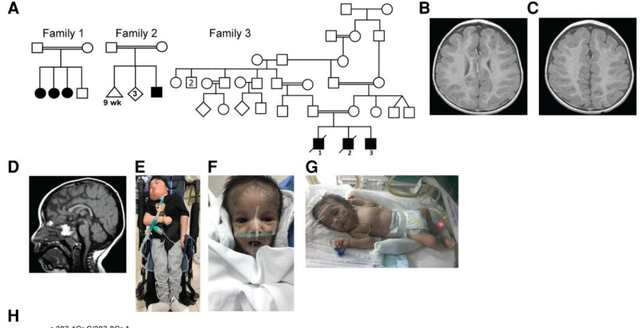
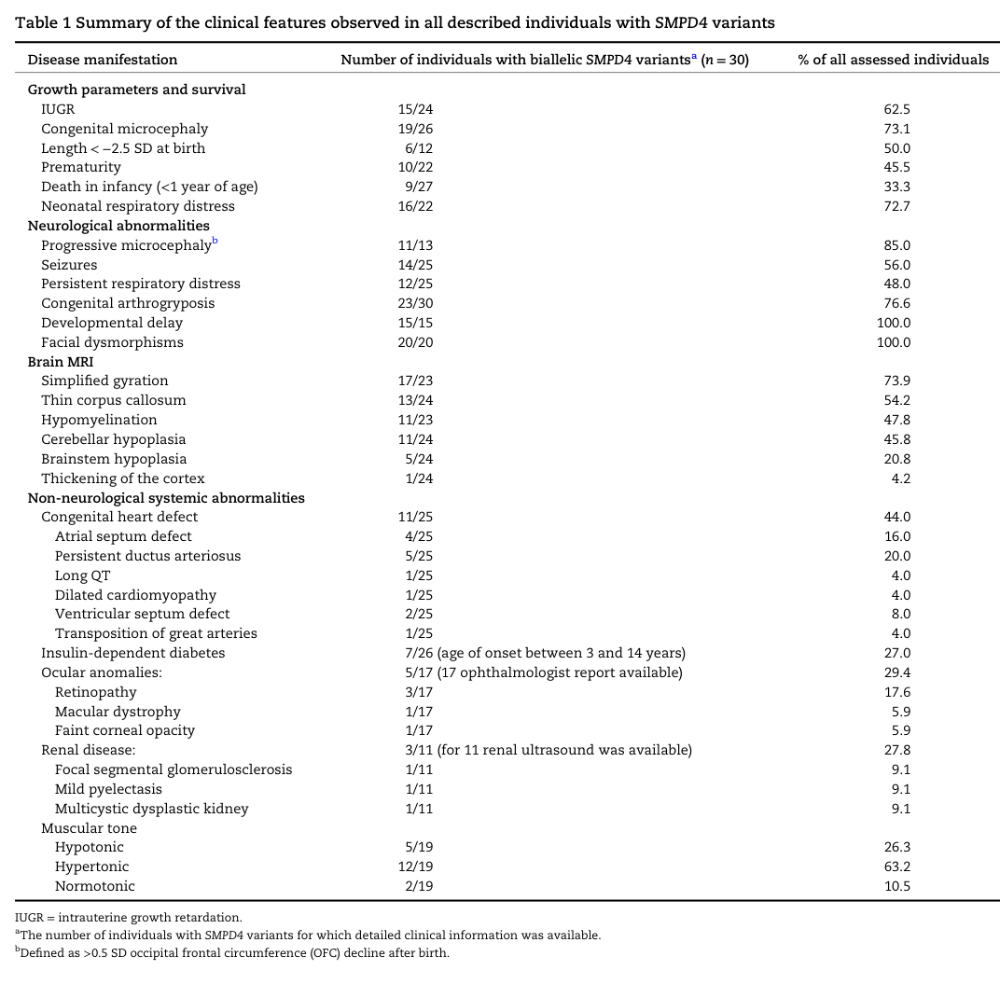
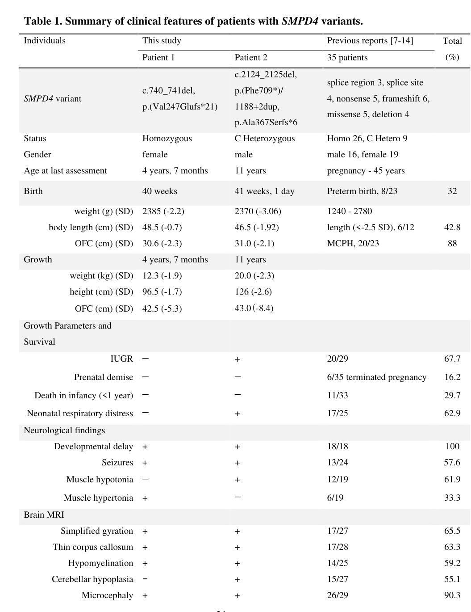

Neurodevelopmental disorder with microcephaly, arthrogryposis, and structural brain anomalies (NEDMABA; OMIM 618622) is an ultra-rare autosomal recessive disorder caused by biallelic loss-of-function variants in SMPD4, which encodes neutral sphingomyelinase-3 (nSMase-3), a membrane enzyme of the endoplasmic reticulum and outer nuclear envelope that hydrolyses sphingomyelin to ceramide and associates with nuclear pore complexes. Affected fetuses often show intrauterine growth restriction, and children are born with microcephaly and congenital arthrogryposis; neuroimaging shows a simplified gyral pattern, a thin corpus callosum, hypomyelination or delayed myelination, and in about half and a fifth of assessed individuals cerebellar and brainstem hypoplasia respectively. The microcephaly is usually progressive, and most children have severe global developmental delay, hypertonia (63%), and about half have seizures (56%). Neonatal respiratory distress affects about three-quarters, facial dysmorphism is universal among those assessed, and 44% have a congenital heart defect. Many die in infancy, chiefly from central hypoventilation and respiratory infections. Children who survive beyond infancy commonly develop autoantibody-negative insulin-dependent diabetes, and cardiomyopathy, retinal dystrophy and hearing loss have been reported in long survivors. Cellular studies show that SMPD4 loss prolongs mitosis, disturbs nuclear envelope breakdown and reassembly and post-mitotic nuclear pore insertion, induces endoplasmic reticulum abnormalities with increased autophagy, shortens primary cilia in a ceramide-rescuable manner, and increases susceptibility to apoptosis, depleting cortical progenitors. No disease-modifying therapy exists.
Ask a research question about Neurodevelopmental Disorder With Microcephaly, Arthrogryposis, And Structural Brain Anomalies. OpenScientist will conduct autonomous deep research using the Disorder Mechanisms Knowledge Base and PubMed literature (typically 10-30 minutes).
Do not include personal health information in your question. Questions and results are cached in your browser's local storage.
name: Neurodevelopmental Disorder With Microcephaly, Arthrogryposis, And Structural Brain Anomalies
creation_date: "2026-10-13T00:00:00Z"
category: Mendelian
synonyms:
- NEDMABA
- SMPD4-related neurodevelopmental disorder
- SMPD4-related disorder
- SMPD4 loss
description: >-
Neurodevelopmental disorder with microcephaly, arthrogryposis, and structural brain anomalies (NEDMABA; OMIM 618622) is an ultra-rare autosomal recessive disorder caused by biallelic loss-of-function variants in SMPD4, which encodes neutral sphingomyelinase-3 (nSMase-3), a membrane enzyme of the endoplasmic reticulum and outer nuclear envelope that hydrolyses sphingomyelin to ceramide and associates with nuclear pore complexes. Affected fetuses often show intrauterine growth restriction, and children are born with microcephaly and congenital arthrogryposis; neuroimaging shows a simplified gyral pattern, a thin corpus callosum, hypomyelination or delayed myelination, and in about half and a fifth of assessed individuals cerebellar and brainstem hypoplasia respectively. The microcephaly is usually progressive, and most children have severe global developmental delay, hypertonia (63%), and about half have seizures (56%). Neonatal respiratory distress affects about three-quarters, facial dysmorphism is universal among those assessed, and 44% have a congenital heart defect. Many die in infancy, chiefly from central hypoventilation and respiratory infections. Children who survive beyond infancy commonly develop autoantibody-negative insulin-dependent diabetes, and cardiomyopathy, retinal dystrophy and hearing loss have been reported in long survivors. Cellular studies show that SMPD4 loss prolongs mitosis, disturbs nuclear envelope breakdown and reassembly and post-mitotic nuclear pore insertion, induces endoplasmic reticulum abnormalities with increased autophagy, shortens primary cilia in a ceramide-rescuable manner, and increases susceptibility to apoptosis, depleting cortical progenitors. No disease-modifying therapy exists.
disease_term:
preferred_term: neurodevelopmental disorder with microcephaly, arthrogryposis, and structural brain anomalies
term:
id: MONDO:0032838
label: neurodevelopmental disorder with microcephaly, arthrogryposis, and structural brain anomalies
parents:
- Mendelian neurodevelopmental disorder
- Complex primary microcephaly
- Sphingolipid metabolism disorder
inheritance:
- name: Autosomal recessive
description: >-
Affected individuals carry homozygous or compound heterozygous SMPD4
variants; heterozygous parents are unaffected. Several reported families are
consanguineous, and in non-consanguineous families one allele is often a
deletion detectable only by copy-number analysis of exome data.
inheritance_term:
preferred_term: Autosomal recessive inheritance
term:
id: HP:0000007
label: Autosomal recessive inheritance
evidence:
- reference: PMID:31495489
reference_title: Loss of SMPD4 Causes a Developmental Disorder Characterized by Microcephaly and Congenital Arthrogryposis.
supports: SUPPORT
evidence_source: HUMAN_CLINICAL
snippet: We have identified an autosomal-recessive syndrome presenting with congenital microcephaly, arthrogryposis, severe neurodevelopmental delay, and early death in 12 unrelated families linked to bi-allelic SMPD4 variants.
explanation: Founding cohort establishes autosomal recessive inheritance of biallelic SMPD4 variants.
- reference: PMID:36703249
reference_title: "Prenatal diagnosis of SMPD4 loss - A neurodevelopmental disorder with microcephaly, arthrogryposis and structural brain anomalies."
supports: SUPPORT
evidence_source: HUMAN_CLINICAL
snippet: Both parents were heterozygous carriers of the pathogenic variant.
explanation: Affected homozygous fetuses born to unaffected heterozygous carrier parents.
prevalence:
- population: Worldwide
measure_type: CASES_IN_LITERATURE
prevalence_class: ULTRA_RARE
notes: >-
No population prevalence study exists. The founding report described
affected children from 12 unrelated families (2019); subsequent case reports
from China, Japan, India and elsewhere and a longitudinal series of five
individuals from three families have added a small number of further
patients.
evidence:
- reference: PMID:31495489
reference_title: Loss of SMPD4 Causes a Developmental Disorder Characterized by Microcephaly and Congenital Arthrogryposis.
supports: SUPPORT
evidence_source: HUMAN_CLINICAL
snippet: Children from 12 unrelated families presented with microcephaly, simplified gyral pattern of the cortex, hypomyelination, cerebellar hypoplasia, congenital arthrogryposis, and early fetal/postnatal demise.
explanation: Documents the small number of families in the founding cohort.
pathophysiology:
- name: Biallelic SMPD4 Loss of Function
description: >-
Biallelic SMPD4 variants (nonsense, frameshift, canonical and deep-intronic
splice variants, intragenic and whole-gene deletions, and a few missense
changes) abolish or strongly reduce SMPD4 protein production. Several
patients are compound heterozygous for a point variant and a deletion that
is detected only by exome-based copy-number analysis or genome sequencing.
role: root
biological_scale: MOLECULAR
mechanism_confidence: ESTABLISHED
gene:
preferred_term: SMPD4
term:
id: hgnc:32949
label: SMPD4
genetic_context:
variant_origin: GERMLINE
functional_impact_category: LOSS_OF_FUNCTION
molecular_functions:
- preferred_term: neutral sphingomyelin phosphodiesterase activity
modifier: DECREASED
term:
id: GO:0061751
label: neutral sphingomyelin phosphodiesterase activity
downstream:
- target: Deficient Neutral Sphingomyelinase-3 Activity at the ER and Nuclear Envelope
causal_link_type: DIRECT
description: >-
Loss of SMPD4 protein removes the neutral sphingomyelinase-3 activity it
encodes.
- target: Hypomyelination
causal_link_type: INDIRECT_UNKNOWN_INTERMEDIATES
description: >-
Hypomyelination and delayed myelination are consistent imaging findings,
but the cellular route from SMPD4 loss to deficient myelination has not
been studied.
- target: Congenital arthrogryposis
causal_link_type: INDIRECT_UNKNOWN_INTERMEDIATES
description: >-
Arthrogryposis is congenital and recurrent, but whether it reflects fetal
hypokinesia secondary to the brain malformation or a separate
neuromuscular effect has not been established.
evidence:
- reference: PMID:31495489
reference_title: Loss of SMPD4 Causes a Developmental Disorder Characterized by Microcephaly and Congenital Arthrogryposis.
supports: SUPPORT
evidence_source: HUMAN_CLINICAL
snippet: Most SMPD4 variants (nonsense, frameshift, or affecting splice sites) were predicted to abolish or strongly reduce protein production, as demonstrated in fibroblasts from affected subjects of families 1 and 2, compatible with a loss-of-function pathogenetic mechanism.
explanation: Establishes the allelic spectrum and loss-of-function mechanism in patient fibroblasts.
- reference: PMID:34622574
reference_title: "A patient with compound heterozygosity of SMPD4: Another example of utility of exome-based copy number analysis in autosomal recessive disorders."
supports: SUPPORT
evidence_source: HUMAN_CLINICAL
snippet: a hemizygous variant in chr2(GRCh37):g.130925108G>A, NM_017951.4 c.832C>T, p.(Arg278*) in SMPD4 that was derived from his father and a deletion of SMPD4 derived from his mother
explanation: A nonsense allele in trans with a whole-gene deletion, illustrating null compound heterozygosity.
- reference: PMID:34621002
reference_title: "Growth and neurodevelopmental disorder with arthrogryposis, microcephaly and structural brain anomalies caused by Bi-allelic partial deletion of SMPD4 gene."
supports: SUPPORT
evidence_source: HUMAN_CLINICAL
snippet: identification of a homozygous 11 kb deletion encompassing exons 18-20 of SMPD 4 gene, confirming the diagnosis of SMPD4-related disorder in her.
explanation: An intragenic homozygous deletion causing the disorder.
- name: Deficient Neutral Sphingomyelinase-3 Activity at the ER and Nuclear Envelope
description: >-
SMPD4 localizes to the endoplasmic reticulum and outer nuclear envelope,
where it hydrolyses sphingomyelin to ceramide at neutral pH and lies close
to nuclear pore complex proteins, including NUP35. Patient fibroblasts lack
SMPD4-specific neutral sphingomyelinase activity, yet whole-cell and
subcellular lipidome fractions are unchanged, which suggests the enzyme
acts locally on nuclear envelope membranes.
biological_scale: MOLECULAR
mechanism_confidence: ESTABLISHED
molecular_functions:
- preferred_term: neutral sphingomyelin phosphodiesterase activity
modifier: DECREASED
term:
id: GO:0061751
label: neutral sphingomyelin phosphodiesterase activity
cellular_components:
- preferred_term: endoplasmic reticulum
term:
id: GO:0005783
label: endoplasmic reticulum
- preferred_term: nuclear envelope
term:
id: GO:0005635
label: nuclear envelope
chemical_entities:
- preferred_term: ceramide
term:
id: CHEBI:17761
label: ceramide
downstream:
- target: Impaired Mitotic Nuclear Envelope Remodelling and Nuclear Pore Insertion
causal_link_type: DIRECT
description: >-
SMPD4 neutral sphingomyelinase activity is required for nuclear envelope
assembly during mitosis.
- target: Endoplasmic Reticulum Stress and Increased Autophagy
causal_link_type: INDIRECT_UNKNOWN_INTERMEDIATES
description: >-
SMPD4-deficient fibroblasts show dilated rough ER cisternae and excess
autophagic vacuoles; the lipid-level link has not been resolved.
- target: Shortened Primary Cilia
causal_link_type: DIRECT
description: >-
Reduced local ceramide production impairs primary cilium growth, which is
rescued by exogenous ceramide.
evidence:
- reference: PMID:36732302
reference_title: SMPD4 regulates mitotic nuclear envelope dynamics and its loss causes microcephaly and diabetes.
supports: SUPPORT
evidence_source: IN_VITRO
snippet: Fibroblasts from affected individuals show deficient SMPD4-specific neutral sphingomyelinase activity, without changing (sub)cellular lipidome fractions, which suggests a local function of SMPD4 on the nuclear envelope.
explanation: Direct enzymatic demonstration of lost neutral sphingomyelinase activity in patient cells.
- reference: PMID:31495489
reference_title: Loss of SMPD4 Causes a Developmental Disorder Characterized by Microcephaly and Congenital Arthrogryposis.
supports: SUPPORT
evidence_source: IN_VITRO
snippet: Overexpression of human Myc-tagged SMPD4 showed localization both to the outer nuclear envelope and the ER and additionally revealed interactions with several nuclear pore complex proteins by proteomics analysis.
explanation: Establishes ER and outer nuclear envelope localization and nuclear pore complex interactions.
- reference: PMID:35203325
reference_title: Proximity Ligation Mapping of Microcephaly Associated SMPD4 Shows Association with Components of the Nuclear Pore Membrane.
supports: SUPPORT
evidence_source: IN_VITRO
snippet: discovered that SMPD4 is closely associated with several nucleoporins, including NUP35, a nucleoporin directly involved in pore membrane curvature and pore insertion.
explanation: Proximity mapping places SMPD4 next to pore-membrane nucleoporins.
- name: Impaired Mitotic Nuclear Envelope Remodelling and Nuclear Pore Insertion
description: >-
In SMPD4-depleted cells, nuclear envelope breakdown and reassembly during
mitosis are abnormal and post-mitotic insertion of nuclear pore complexes is
reduced; patient fibroblasts carry fewer nuclear pores per nuclear surface
area. The proposed explanation is that SMPD4-generated ceramide is needed to
bend the nuclear envelope for pore insertion.
biological_scale: CELLULAR
mechanism_confidence: PROVISIONAL
biological_processes:
- preferred_term: mitotic nuclear membrane disassembly
modifier: ABNORMAL
term:
id: GO:0007077
label: mitotic nuclear membrane disassembly
- preferred_term: mitotic nuclear membrane reassembly
modifier: ABNORMAL
term:
id: GO:0007084
label: mitotic nuclear membrane reassembly
- preferred_term: nuclear pore complex assembly
modifier: DECREASED
term:
id: GO:0051292
label: nuclear pore complex assembly
downstream:
- target: Prolonged Mitosis and Cortical Progenitor Depletion
causal_link_type: DIRECT
description: >-
Defective nuclear envelope dynamics prolong mitosis in neural stem cells
and reduce their proliferation.
- target: Pancreatic Beta-Cell Failure
causal_link_type: INDIRECT_UNKNOWN_INTERMEDIATES
description: >-
Hypothesized by the authors: impaired nuclear envelope bending for pore
insertion is proposed to interfere with beta-cell survival.
evidence:
- reference: PMID:36732302
reference_title: SMPD4 regulates mitotic nuclear envelope dynamics and its loss causes microcephaly and diabetes.
supports: SUPPORT
evidence_source: IN_VITRO
snippet: Moreover, SMPD4 depletion results in abnormal nuclear envelope breakdown and reassembly during mitosis and decreased post-mitotic NPC insertion.
explanation: Direct cellular observation of the nuclear envelope and pore insertion defect.
- reference: PMID:36732302
reference_title: SMPD4 regulates mitotic nuclear envelope dynamics and its loss causes microcephaly and diabetes.
supports: SUPPORT
evidence_source: IN_VITRO
snippet: Fibroblasts derived from unrelated patients with SMPD4 variants contained fewer nuclear pores per nuclear surface area in both post-mitotic conditions
explanation: Reduced nuclear pore density in patient-derived cells.
- name: Endoplasmic Reticulum Stress and Increased Autophagy
description: >-
Electron microscopy of patient fibroblasts shows dilated rough ER cisternae
with floccular material, more lysosomes and late autophagic vacuoles, and
LC3B-II immunostaining is increased, consistent with ER stress and activated
autophagy.
biological_scale: CELLULAR
mechanism_confidence: PROVISIONAL
cell_types:
- preferred_term: fibroblast
term:
id: CL:0000057
label: fibroblast
biological_processes:
- preferred_term: response to endoplasmic reticulum stress
modifier: INCREASED
term:
id: GO:0034976
label: response to endoplasmic reticulum stress
- preferred_term: autophagy
modifier: INCREASED
term:
id: GO:0006914
label: autophagy
downstream:
- target: Increased Susceptibility to Apoptosis
causal_link_type: INDIRECT_UNKNOWN_INTERMEDIATES
description: >-
ER stress is the proposed link to the increased apoptotic susceptibility
of SMPD4-deficient cells.
evidence:
- reference: PMID:31495489
reference_title: Loss of SMPD4 Causes a Developmental Disorder Characterized by Microcephaly and Congenital Arthrogryposis.
supports: SUPPORT
evidence_source: IN_VITRO
snippet: Cellular abnormalities in SMPD4-deficient cells include dilated RER cisternae (black arrowheads), with floccular material (white asterisks), increase of lysosomes (ly), and late autophagic vacuoles (white arrow).
explanation: Ultrastructural evidence of ER abnormalities and increased autophagy in patient fibroblasts.
- reference: PMID:31495489
reference_title: Loss of SMPD4 Causes a Developmental Disorder Characterized by Microcephaly and Congenital Arthrogryposis.
supports: SUPPORT
evidence_source: IN_VITRO
snippet: We provide evidence that SMPD4 loss induces ER stress, autophagy, and interference with sphingolipids homeostasis.
explanation: Authors' synthesis of their cellular findings.
- name: Shortened Primary Cilia
description: >-
Human iPSC-derived models lacking SMPD4 have shortened, bulbous primary cilia, and adding exogenous ceramide restores cilium length, implicating SMPD4-generated ceramide in ciliogenesis. Smpd4 knockout in embryonic ferret cortex also impairs primary cilia formation in vivo, whereas cultured Smpd4-null mouse forebrain neurons have cilia of normal number and length.
biological_scale: CELLULAR
mechanism_confidence: PROVISIONAL
biological_processes:
- preferred_term: cilium assembly
modifier: DECREASED
term:
id: GO:0060271
label: cilium assembly
downstream:
- target: Prolonged Mitosis and Cortical Progenitor Depletion
causal_link_type: INDIRECT_UNKNOWN_INTERMEDIATES
description: >-
Primary cilia are linked to cell-cycle control and neural progenitor
survival; the iPSC model shows neural progenitor death alongside
shortened cilia.
evidence:
- reference: PMID:39470011
reference_title: SMPD4-mediated sphingolipid metabolism regulates brain and primary cilia development.
supports: SUPPORT
evidence_source: IN_VITRO
snippet: Human induced pluripotent stem cells lacking SMPD4 exhibit neural progenitor cell death and have shortened primary cilia, which is rescued by adding exogenous ceramide.
explanation: Shows the cilia defect in human cells and its ceramide rescue.
- reference: PMID:39470011
reference_title: SMPD4-mediated sphingolipid metabolism regulates brain and primary cilia development.
supports: SUPPORT
evidence_source: MODEL_ORGANISM
snippet: The primary cilia in cultured mouse E14.5 forebrain neurons from wild-type (WT) and homozygous Smpd4null/null all appeared to be comparable in number and length
explanation: Documents that null mouse neurons do not show the cilia defect.
- reference: PMID:42389936
reference_title: SMPD4 deficiency disrupts indirect neurogenesis and neuronal migration in gyrencephalic cortex.
supports: SUPPORT
evidence_source: MODEL_ORGANISM
snippet: Mechanistically, loss of SMPD4 compromised nuclear envelope integrity, disrupted mitotic spindle orientation leading to aberrant cell division patterns, impaired primary cilia formation, and substantially reduced intermediate progenitor morphological complexity.
explanation: In vivo ferret cortex knockout impairs primary cilia formation.
- name: Increased Susceptibility to Apoptosis
description: >-
Patient fibroblasts show more caspase activation after oxidative stress and
a larger sub-G1 (apoptotic) population than controls, and SMPD4-deficient
human neural progenitors die in culture. Apoptosis is proposed to contribute
to progenitor loss in the developing brain and to Purkinje cell and
pancreatic beta-cell loss.
biological_scale: CELLULAR
mechanism_confidence: PROVISIONAL
biological_processes:
- preferred_term: apoptotic process
modifier: INCREASED
term:
id: GO:0006915
label: apoptotic process
downstream:
- target: Prolonged Mitosis and Cortical Progenitor Depletion
causal_link_type: INDIRECT_KNOWN_INTERMEDIATES
description: Neural progenitor death contributes to progenitor depletion.
- target: Postnatal Purkinje Cell Loss
causal_link_type: INDIRECT_UNKNOWN_INTERMEDIATES
description: >-
Purkinje cells in the null mouse are generated normally but die
postnatally by apoptosis.
- target: Pancreatic Beta-Cell Failure
causal_link_type: INDIRECT_UNKNOWN_INTERMEDIATES
description: >-
Beta-cell loss is hypothesized by analogy with other microcephaly-diabetes
disorders involving ER stress and apoptosis.
evidence:
- reference: PMID:31495489
reference_title: Loss of SMPD4 Causes a Developmental Disorder Characterized by Microcephaly and Congenital Arthrogryposis.
supports: SUPPORT
evidence_source: IN_VITRO
snippet: Testing predisposition to apoptosis by detecting activated caspases in living cells after stress induced by hydrogen peroxide showed that fibroblasts from affected individulas are more susceptible to cell death than control subjects
explanation: Patient fibroblasts are more susceptible to stress-induced apoptosis.
- reference: PMID:39470011
reference_title: SMPD4-mediated sphingolipid metabolism regulates brain and primary cilia development.
supports: SUPPORT
evidence_source: IN_VITRO
snippet: Human induced pluripotent stem cells lacking SMPD4 exhibit neural progenitor cell death and have shortened primary cilia
explanation: Neural progenitor death in SMPD4-deficient human cells.
- reference: PMID:36732302
reference_title: SMPD4 regulates mitotic nuclear envelope dynamics and its loss causes microcephaly and diabetes.
supports: SUPPORT
evidence_source: HUMAN_CLINICAL
quote_role: BACKGROUND
snippet: The association between insulin-dependent diabetes and microcephaly was previously observed in rare recessive microcephalies related to ER stress and apoptosis.
explanation: Basis for the analogy between SMPD4 deficiency and other ER-stress microcephaly-diabetes disorders.
- name: Prolonged Mitosis and Cortical Progenitor Depletion
description: >-
Knock-down of SMPD4 in human neural stem cells reduces proliferation and
prolongs mitosis. In embryonic mouse cortex, Smpd4 knockdown increases
cell-cycle exit and premature neuronal differentiation, exhausting apical
progenitors. In gyrencephalic ferret cortex, Smpd4 knockout reduces
progenitor proliferation, prolongs mitosis, depletes basal intermediate
progenitors and disrupts neuronal migration. Progenitor depletion is the
proposed basis of the congenital microcephaly and simplified gyral pattern.
biological_scale: CELLULAR
mechanism_confidence: PROVISIONAL
cell_types:
- preferred_term: neural progenitor cell
term:
id: CL:0011020
label: neural progenitor cell
biological_processes:
- preferred_term: neural precursor cell proliferation
modifier: DECREASED
term:
id: GO:0061351
label: neural precursor cell proliferation
- preferred_term: neuron migration
modifier: ABNORMAL
term:
id: GO:0001764
label: neuron migration
- preferred_term: establishment of mitotic spindle orientation
modifier: ABNORMAL
term:
id: GO:0000132
label: establishment of mitotic spindle orientation
downstream:
- target: Congenital microcephaly
causal_link_type: DIRECT
description: Fewer progenitors produce fewer neurons and a smaller brain.
- target: Simplified gyral pattern
causal_link_type: INDIRECT_KNOWN_INTERMEDIATES
description: >-
Loss of basal intermediate progenitors and disordered neuronal migration
in gyrencephalic cortex are the proposed basis of simplified gyration.
- target: Thin corpus callosum
causal_link_type: INDIRECT_UNKNOWN_INTERMEDIATES
description: Reduced neuronal output is the presumed basis of the thin corpus callosum.
- target: Severe global developmental delay
causal_link_type: INDIRECT_UNKNOWN_INTERMEDIATES
description: The cortical malformation underlies the severe developmental impairment.
- target: Seizures
causal_link_type: INDIRECT_UNKNOWN_INTERMEDIATES
description: >-
Seizures accompany the cortical malformation; their specific mechanism
has not been studied.
- target: Hypertonia
causal_link_type: INDIRECT_UNKNOWN_INTERMEDIATES
description: Hypertonia reflects the central nervous system malformation.
evidence:
- reference: PMID:36732302
reference_title: SMPD4 regulates mitotic nuclear envelope dynamics and its loss causes microcephaly and diabetes.
supports: SUPPORT
evidence_source: IN_VITRO
snippet: Knock-down of SMPD4 in human neural stem cells causes reduced proliferation rates and prolonged mitosis.
explanation: Reduced proliferation and prolonged mitosis in human neural stem cells.
- reference: PMID:36732302
reference_title: SMPD4 regulates mitotic nuclear envelope dynamics and its loss causes microcephaly and diabetes.
supports: SUPPORT
evidence_source: MODEL_ORGANISM
snippet: In embryonic mouse brain, knockdown of Smpd4 impairs cortical progenitor proliferation and induces premature differentiation by altering the balance between neurogenic and proliferative progenitor cell divisions.
explanation: In vivo progenitor depletion in embryonic mouse cortex.
- reference: PMID:42389936
reference_title: SMPD4 deficiency disrupts indirect neurogenesis and neuronal migration in gyrencephalic cortex.
supports: SUPPORT
evidence_source: MODEL_ORGANISM
snippet: SMPD4-deficient ferret cortices successfully recapitulated key human phenotypes, exhibiting markedly reduced progenitor cell proliferation with significantly prolonged mitotic duration.
explanation: Gyrencephalic model reproduces the progenitor proliferation defect.
- reference: PMID:42389936
reference_title: SMPD4 deficiency disrupts indirect neurogenesis and neuronal migration in gyrencephalic cortex.
supports: SUPPORT
evidence_source: MODEL_ORGANISM
snippet: Additionally, Smpd4 knockout induced severe migration defects in cortical neurons, with many neurons failing to reach their appropriate cortical layers.
explanation: Neuronal migration defect in ferret cortex.
- reference: PMID:42389936
reference_title: SMPD4 deficiency disrupts indirect neurogenesis and neuronal migration in gyrencephalic cortex.
supports: SUPPORT
evidence_source: MODEL_ORGANISM
snippet: Mechanistically, loss of SMPD4 compromised nuclear envelope integrity, disrupted mitotic spindle orientation leading to aberrant cell division patterns, impaired primary cilia formation, and substantially reduced intermediate progenitor morphological complexity.
explanation: Disrupted spindle orientation and aberrant division patterns in ferret cortical progenitors.
- name: Postnatal Purkinje Cell Loss
description: >-
In Smpd4-null mice, Purkinje cells are generated in normal numbers but fail
to survive postnatally, reducing trophic support for granule cell
progenitors and producing a small cerebellum and ataxia. This is the mouse
correlate of the cerebellar hypoplasia seen in some patients; it has not
been examined in human tissue.
biological_scale: CELLULAR
mechanism_confidence: PROVISIONAL
cell_types:
- preferred_term: Purkinje cell
term:
id: CL:0000121
label: Purkinje cell
biological_processes:
- preferred_term: cerebellar Purkinje cell layer development
modifier: ABNORMAL
term:
id: GO:0021680
label: cerebellar Purkinje cell layer development
downstream:
- target: Cerebellar hypoplasia
causal_link_type: DIRECT
description: Purkinje cell loss results in a smaller cerebellum.
evidence:
- reference: PMID:39470011
reference_title: SMPD4-mediated sphingolipid metabolism regulates brain and primary cilia development.
supports: SUPPORT
evidence_source: MODEL_ORGANISM
snippet: We found that the mouse model has cerebellar hypoplasia due to failure of Purkinje cell development.
explanation: Mouse genetic model links Purkinje cell failure to cerebellar hypoplasia.
- reference: PMID:39470011
reference_title: SMPD4-mediated sphingolipid metabolism regulates brain and primary cilia development.
supports: SUPPORT
evidence_source: MODEL_ORGANISM
snippet: Overall, these data support a model wherein Smpd4 is required for postnatal survival, but not initial generation, of Purkinje cells.
explanation: Shows the defect is postnatal survival rather than generation.
- name: Pancreatic Beta-Cell Failure
description: >-
Children surviving beyond infancy develop autoantibody-negative,
insulin-dependent diabetes with impaired insulin secretion. The authors
hypothesize that impaired nuclear envelope remodelling and nuclear pore
insertion compromise beta-cell survival; this has not been tested in islets
or a beta-cell model.
biological_scale: CELLULAR
mechanism_confidence: HYPOTHETICAL
cell_types:
- preferred_term: type B pancreatic cell
term:
id: CL:0000169
label: type B pancreatic cell
biological_processes:
- preferred_term: insulin secretion
modifier: DECREASED
term:
id: GO:0030073
label: insulin secretion
downstream:
- target: Insulin-dependent diabetes mellitus
causal_link_type: DIRECT
description: Loss of insulin secretory capacity produces insulin-dependent diabetes.
evidence:
- reference: PMID:36732302
reference_title: SMPD4 regulates mitotic nuclear envelope dynamics and its loss causes microcephaly and diabetes.
supports: SUPPORT
evidence_source: HUMAN_CLINICAL
snippet: We hypothesize that, in individuals with SMPD4-related disease, nuclear envelope bending, which is needed to insert NPCs in the nuclear envelope, is impaired in the absence of SMPD4 and interferes with cerebral corticogenesis and survival of pancreatic beta cells.
explanation: States the beta-cell survival hypothesis explicitly as a hypothesis.
- reference: PMID:42830432
reference_title: Fatal Dilated Cardiomyopathy and Monogenic Diabetes Mellitus as SMPD4-Related Disorder.
supports: SUPPORT
evidence_source: HUMAN_CLINICAL
snippet: DM was characterized by progressively increasing insulin requirements due to impaired insulin secretion, leading to the diagnosis of monogenic diabetes associated with SMPD4 deficiency.
explanation: Clinical evidence that the diabetes reflects impaired insulin secretion.
phenotypes:
- category: Neurologic
name: Congenital microcephaly
frequency: 19/26
description: >-
Microcephaly is congenital in 19 of 26 assessed individuals (73%) and progressive after birth in 11 of 13 with follow-up (85%); it may not be visible on fetal imaging before late pregnancy.
phenotype_term:
preferred_term: Congenital microcephaly
term:
id: HP:0000252
label: Microcephaly
clinical_course: PROGRESSIVE
evidence:
- reference: PMID:31495489
reference_title: Loss of SMPD4 Causes a Developmental Disorder Characterized by Microcephaly and Congenital Arthrogryposis.
supports: SUPPORT
evidence_source: HUMAN_CLINICAL
snippet: Children from 12 unrelated families presented with microcephaly, simplified gyral pattern of the cortex, hypomyelination, cerebellar hypoplasia, congenital arthrogryposis, and early fetal/postnatal demise.
explanation: Microcephaly is a defining feature of the founding cohort.
- reference: PMID:36732302
reference_title: SMPD4 regulates mitotic nuclear envelope dynamics and its loss causes microcephaly and diabetes.
supports: SUPPORT
evidence_source: HUMAN_CLINICAL
snippet: The microcephaly had a progressive character in almost all subjects for whom follow-up data were available (85%).
explanation: Microcephaly is progressive in most individuals with follow-up.
- reference: PMID:36732302
reference_title: SMPD4 regulates mitotic nuclear envelope dynamics and its loss causes microcephaly and diabetes.
supports: SUPPORT
evidence_source: HUMAN_CLINICAL
snippet: Congenital microcephaly | 19/26 | 73.1
explanation: Table 1 of the 30-individual compiled cohort gives the proportion of assessed individuals with congenital and progressive microcephaly.
- reference: PMID:36732302
reference_title: SMPD4 regulates mitotic nuclear envelope dynamics and its loss causes microcephaly and diabetes.
supports: SUPPORT
evidence_source: HUMAN_CLINICAL
snippet: Progressive microcephalyb | 11/13 | 85.0
explanation: Table 1 of the 30-individual compiled cohort gives the proportion of assessed individuals with congenital and progressive microcephaly.
- category: Musculoskeletal
name: Congenital arthrogryposis
frequency: 23/30
description: >-
Congenital joint contractures, mainly of the hands and feet (clenched hands, adducted thumbs, foot deformities such as vertical talus), are present from birth in 23 of 30 individuals (77%) and can be seen prenatally.
phenotype_term:
preferred_term: Congenital arthrogryposis
term:
id: HP:0002804
label: Arthrogryposis multiplex congenita
evidence:
- reference: PMID:31495489
reference_title: Loss of SMPD4 Causes a Developmental Disorder Characterized by Microcephaly and Congenital Arthrogryposis.
supports: SUPPORT
evidence_source: HUMAN_CLINICAL
snippet: Here, we report on 12 families including individuals presenting with congenital microcephaly with simplified gyral pattern, mild cerebellar hypoplasia, severe encephalopathy, congenital arthrogryposis, diabetes mellitus, cardiomyopathy, and early demise.
explanation: Congenital arthrogryposis recurs across the founding cohort.
- reference: PMID:36703249
reference_title: "Prenatal diagnosis of SMPD4 loss - A neurodevelopmental disorder with microcephaly, arthrogryposis and structural brain anomalies."
supports: SUPPORT
evidence_source: HUMAN_CLINICAL
snippet: The phenotypes can include growth restriction, arthrogryposis (clenched hands, foot deformity), as well as cerebral abnormalities
explanation: Arthrogryposis is detectable prenatally.
- reference: PMID:36732302
reference_title: SMPD4 regulates mitotic nuclear envelope dynamics and its loss causes microcephaly and diabetes.
supports: SUPPORT
evidence_source: HUMAN_CLINICAL
snippet: Congenital arthrogryposis | 23/30 | 76.6
explanation: Table 1 of the 30-individual compiled cohort gives the proportion of assessed individuals with congenital arthrogryposis.
- category: Craniofacial
name: Facial dysmorphism
frequency: 20/20
description: >-
Facial dysmorphism is reported in all 20 individuals assessed; no consistent facial gestalt has been defined.
phenotype_term:
preferred_term: Facial dysmorphism
term:
id: HP:0001999
label: Abnormal facial shape
evidence:
- reference: PMID:36732302
reference_title: SMPD4 regulates mitotic nuclear envelope dynamics and its loss causes microcephaly and diabetes.
supports: SUPPORT
evidence_source: HUMAN_CLINICAL
snippet: Facial dysmorphisms | 20/20 | 100.0
explanation: Table 1 of the 30-individual compiled cohort gives the proportion of assessed individuals with facial dysmorphism.
- reference: PMID:37882972
reference_title: Two novel cases of biallelic SMPD4 variants with brain structural abnormalities.
supports: SUPPORT
evidence_source: HUMAN_CLINICAL
snippet: insulin-dependent diabetes mellitus, sensorineural hearing loss, facial dysmorphism
explanation: Facial dysmorphism in an independent patient.
- category: Neurologic
name: Simplified gyral pattern
frequency: 17/23
description: >-
A simplified gyral pattern with a normal or thin cortex is seen on MRI in 17 of 23 assessed individuals (74%).
phenotype_term:
preferred_term: Simplified gyral pattern
term:
id: HP:0009879
label: Simplified gyral pattern
evidence:
- reference: PMID:31495489
reference_title: Loss of SMPD4 Causes a Developmental Disorder Characterized by Microcephaly and Congenital Arthrogryposis.
supports: SUPPORT
evidence_source: HUMAN_CLINICAL
snippet: Neuroimaging at birth or in infancy was available for nine individuals and consistently showed microcephaly with a simplified gyral pattern and a normal or even thin cortical layer, a thin corpus callosum, delayed myelination, and in some cases mild cerebellar and brainstem hypoplasia
explanation: Consistent imaging finding in the founding cohort.
- reference: PMID:36732302
reference_title: SMPD4 regulates mitotic nuclear envelope dynamics and its loss causes microcephaly and diabetes.
supports: SUPPORT
evidence_source: HUMAN_CLINICAL
snippet: Simplified gyration | 17/23 | 73.9
explanation: Table 1 of the 30-individual compiled cohort gives the proportion of assessed individuals with a simplified gyral pattern.
- category: Neurologic
name: Thin corpus callosum
frequency: 13/24
phenotype_term:
preferred_term: Thin corpus callosum
term:
id: HP:0033725
label: Thin corpus callosum
evidence:
- reference: PMID:31495489
reference_title: Loss of SMPD4 Causes a Developmental Disorder Characterized by Microcephaly and Congenital Arthrogryposis.
supports: SUPPORT
evidence_source: HUMAN_CLINICAL
snippet: consistently showed microcephaly with a simplified gyral pattern and a normal or even thin cortical layer, a thin corpus callosum, delayed myelination
explanation: Thin corpus callosum on neuroimaging.
- reference: PMID:37882972
reference_title: Two novel cases of biallelic SMPD4 variants with brain structural abnormalities.
supports: SUPPORT
evidence_source: HUMAN_CLINICAL
snippet: showed profound intellectual disability, hepatomegaly, a simplified gyral pattern, and a thin corpus callosum without congenital dysmorphic features
explanation: Independent case with a thin corpus callosum.
- reference: PMID:36732302
reference_title: SMPD4 regulates mitotic nuclear envelope dynamics and its loss causes microcephaly and diabetes.
supports: SUPPORT
evidence_source: HUMAN_CLINICAL
snippet: Thin corpus callosum | 13/24 | 54.2
explanation: Table 1 of the 30-individual compiled cohort gives the proportion of assessed individuals with a thin corpus callosum.
- category: Neurologic
name: Hypomyelination
frequency: 11/23
description: >-
Global hypomyelination or delayed CNS myelination is seen on MRI in 11 of 23 assessed individuals (48%).
phenotype_term:
preferred_term: Hypomyelination
term:
id: HP:0003429
label: CNS hypomyelination
evidence:
- reference: PMID:31495489
reference_title: Loss of SMPD4 Causes a Developmental Disorder Characterized by Microcephaly and Congenital Arthrogryposis.
supports: SUPPORT
evidence_source: HUMAN_CLINICAL
snippet: Family 2, V-2 (E-A) at 5 years, showing simplified gyral pattern, mild brain stem hypoplasia, thin corpus callosum and global hypomyelination in (L).
explanation: Global hypomyelination on MRI.
- reference: PMID:35651939
reference_title: "Case Report: Novel Biallelic Null Variants of SMPD4 Confirm Its Involvement in Neurodevelopmental Disorder With Microcephaly, Arthrogryposis, and Structural Brain Anomalies."
supports: SUPPORT
evidence_source: HUMAN_CLINICAL
snippet: arthrogryposis, hypertonicity, seizure, and hypomyelination on brain magnetic resonance imaging
explanation: Hypomyelination in an independent case.
- reference: PMID:36732302
reference_title: SMPD4 regulates mitotic nuclear envelope dynamics and its loss causes microcephaly and diabetes.
supports: SUPPORT
evidence_source: HUMAN_CLINICAL
snippet: Hypomyelination | 11/23 | 47.8
explanation: Table 1 of the 30-individual compiled cohort gives the proportion of assessed individuals with hypomyelination.
- category: Neurologic
name: Cerebellar hypoplasia
frequency: 11/24
description: >-
Mild cerebellar hypoplasia is seen in 11 of 24 assessed individuals (46%).
phenotype_term:
preferred_term: Cerebellar hypoplasia
term:
id: HP:0001321
label: Cerebellar hypoplasia
evidence:
- reference: PMID:31495489
reference_title: Loss of SMPD4 Causes a Developmental Disorder Characterized by Microcephaly and Congenital Arthrogryposis.
supports: SUPPORT
evidence_source: HUMAN_CLINICAL
snippet: Children from 12 unrelated families presented with microcephaly, simplified gyral pattern of the cortex, hypomyelination, cerebellar hypoplasia
explanation: Cerebellar hypoplasia in the founding cohort.
- reference: PMID:36732302
reference_title: SMPD4 regulates mitotic nuclear envelope dynamics and its loss causes microcephaly and diabetes.
supports: SUPPORT
evidence_source: HUMAN_CLINICAL
snippet: Cerebellar hypoplasia | 11/24 | 45.8
explanation: Table 1 of the 30-individual compiled cohort gives the proportion of assessed individuals with cerebellar hypoplasia.
- category: Neurologic
name: Brainstem hypoplasia
frequency: 5/24
phenotype_term:
preferred_term: Brainstem hypoplasia
term:
id: HP:0002365
label: Hypoplasia of the brainstem
evidence:
- reference: PMID:34622574
reference_title: "A patient with compound heterozygosity of SMPD4: Another example of utility of exome-based copy number analysis in autosomal recessive disorders."
supports: SUPPORT
evidence_source: HUMAN_CLINICAL
snippet: He had severe neonatal asphyxia, severe intellectual disability, intractable seizures, cerebellar and brainstem hypoplasia and dysmorphic features
explanation: Brainstem hypoplasia in a compound heterozygous patient.
- reference: PMID:36732302
reference_title: SMPD4 regulates mitotic nuclear envelope dynamics and its loss causes microcephaly and diabetes.
supports: SUPPORT
evidence_source: HUMAN_CLINICAL
snippet: Brainstem hypoplasia | 5/24 | 20.8
explanation: Table 1 of the 30-individual compiled cohort gives the proportion of assessed individuals with brainstem hypoplasia.
- category: Growth
name: Intrauterine growth restriction
frequency: 15/24
phenotype_term:
preferred_term: Intrauterine growth restriction
term:
id: HP:0001511
label: Intrauterine growth retardation
evidence:
- reference: PMID:35651939
reference_title: "Case Report: Novel Biallelic Null Variants of SMPD4 Confirm Its Involvement in Neurodevelopmental Disorder With Microcephaly, Arthrogryposis, and Structural Brain Anomalies."
supports: SUPPORT
evidence_source: HUMAN_CLINICAL
quote_role: BACKGROUND
snippet: The majority of individuals with NEDMABA present with intrauterine growth restriction (IUGR), congenital microcephaly, neonatal respiratory distress, and arthrogryposis of the hands and feet.
explanation: Case report's summary of the published cohort identifies IUGR as a majority feature.
- reference: PMID:34621002
reference_title: "Growth and neurodevelopmental disorder with arthrogryposis, microcephaly and structural brain anomalies caused by Bi-allelic partial deletion of SMPD4 gene."
supports: SUPPORT
evidence_source: HUMAN_CLINICAL
snippet: neurodevelopmental delay, prenatal onset growth failure, arthrogryposis, microcephaly and brain anomalies
explanation: Prenatal-onset growth failure in an independent case.
- reference: PMID:36732302
reference_title: SMPD4 regulates mitotic nuclear envelope dynamics and its loss causes microcephaly and diabetes.
supports: SUPPORT
evidence_source: HUMAN_CLINICAL
snippet: IUGR | 15/24 | 62.5
explanation: Table 1 of the 30-individual compiled cohort gives the proportion of assessed individuals with intrauterine growth restriction.
- category: Growth
name: Premature birth
frequency: 10/22
description: >-
Birth is premature in 10 of 22 assessed individuals (45%).
phenotype_term:
preferred_term: Premature birth
term:
id: HP:0001622
label: Premature birth
evidence:
- reference: PMID:36732302
reference_title: SMPD4 regulates mitotic nuclear envelope dynamics and its loss causes microcephaly and diabetes.
supports: SUPPORT
evidence_source: HUMAN_CLINICAL
snippet: Prematurity | 10/22 | 45.5
explanation: Table 1 of the 30-individual compiled cohort gives the proportion of assessed individuals with premature birth.
- category: Neurologic
name: Severe global developmental delay
frequency: 15/15
phenotype_term:
preferred_term: Severe global developmental delay
term:
id: HP:0001263
label: Global developmental delay
severity: SEVERE
evidence:
- reference: PMID:36732302
reference_title: SMPD4 regulates mitotic nuclear envelope dynamics and its loss causes microcephaly and diabetes.
supports: SUPPORT
evidence_source: HUMAN_CLINICAL
snippet: This subject presented with a similar disease course including persistent respiratory failure, generalized seizures, severe progressive microcephaly (−6 SD), distal arthrogryposis and severe global developmental delay.
explanation: Severe global developmental delay with the core features.
- reference: PMID:31495489
reference_title: Loss of SMPD4 Causes a Developmental Disorder Characterized by Microcephaly and Congenital Arthrogryposis.
supports: SUPPORT
evidence_source: HUMAN_CLINICAL
snippet: We have identified an autosomal-recessive syndrome presenting with congenital microcephaly, arthrogryposis, severe neurodevelopmental delay, and early death
explanation: Severe neurodevelopmental delay in the founding cohort.
- reference: PMID:36732302
reference_title: SMPD4 regulates mitotic nuclear envelope dynamics and its loss causes microcephaly and diabetes.
supports: SUPPORT
evidence_source: HUMAN_CLINICAL
snippet: Developmental delay | 15/15 | 100.0
explanation: Table 1 of the 30-individual compiled cohort gives the proportion of assessed individuals with developmental delay.
- category: Neurologic
name: Seizures
frequency: 14/25
description: >-
Seizures occur in 14 of 25 assessed individuals (56%), including fever-provoked focal or generalized seizures in longer survivors; no defined epileptic syndrome has been described.
phenotype_term:
preferred_term: Seizures
term:
id: HP:0001250
label: Seizure
evidence:
- reference: PMID:31495489
reference_title: Loss of SMPD4 Causes a Developmental Disorder Characterized by Microcephaly and Congenital Arthrogryposis.
supports: SUPPORT
evidence_source: HUMAN_CLINICAL
snippet: The longest surviving children from family 9 are reported to have suffered from focal or secondary generalized seizures, provoked by fever.
explanation: Seizures in longer survivors.
- reference: PMID:37882972
reference_title: Two novel cases of biallelic SMPD4 variants with brain structural abnormalities.
supports: SUPPORT
evidence_source: HUMAN_CLINICAL
snippet: two independent patients with developmental delays, microcephaly, seizures, and brain structural abnormalities
explanation: Seizures in two further patients.
- reference: PMID:36732302
reference_title: SMPD4 regulates mitotic nuclear envelope dynamics and its loss causes microcephaly and diabetes.
supports: SUPPORT
evidence_source: HUMAN_CLINICAL
snippet: Seizures | 14/25 | 56.0
explanation: Table 1 of the 30-individual compiled cohort gives the proportion of assessed individuals with seizures.
- category: Neurologic
name: Hypertonia
frequency: 12/19
phenotype_term:
preferred_term: Hypertonia
term:
id: HP:0001276
label: Hypertonia
evidence:
- reference: PMID:35651939
reference_title: "Case Report: Novel Biallelic Null Variants of SMPD4 Confirm Its Involvement in Neurodevelopmental Disorder With Microcephaly, Arthrogryposis, and Structural Brain Anomalies."
supports: SUPPORT
evidence_source: HUMAN_CLINICAL
snippet: presenting with IUGR, microcephaly, postnatal developmental delay, hypomyelination, arthrogryposis, hypertonicity, and seizures
explanation: Hypertonia in an affected child.
- reference: PMID:36732302
reference_title: SMPD4 regulates mitotic nuclear envelope dynamics and its loss causes microcephaly and diabetes.
supports: SUPPORT
evidence_source: HUMAN_CLINICAL
snippet: Hypertonic | 12/19 | 63.2
explanation: Table 1 of the 30-individual compiled cohort gives the proportion of assessed individuals with hypertonia.
- category: Neurologic
name: Hypotonia
frequency: 5/19
description: >-
Muscular hypotonia is recorded in 5 of 19 individuals (26%); most others are hypertonic.
phenotype_term:
preferred_term: Hypotonia
term:
id: HP:0001252
label: Hypotonia
evidence:
- reference: PMID:36732302
reference_title: SMPD4 regulates mitotic nuclear envelope dynamics and its loss causes microcephaly and diabetes.
supports: SUPPORT
evidence_source: HUMAN_CLINICAL
snippet: Hypotonic | 5/19 | 26.3
explanation: Table 1 of the 30-individual compiled cohort gives the proportion of assessed individuals with hypotonia.
- reference: PMID:37882972
reference_title: Two novel cases of biallelic SMPD4 variants with brain structural abnormalities.
supports: SUPPORT
evidence_source: HUMAN_CLINICAL
snippet: He exhibited diverse manifestations, including growth defects, muscle hypotonia, respiratory distress, arthrogryposis
explanation: Hypotonia in an independent patient.
- category: Respiratory
name: Neonatal respiratory distress
frequency: 16/22
description: >-
Neonatal respiratory distress affects 16 of 22 assessed individuals (73%) and often prevents weaning from assisted ventilation.
phenotype_term:
preferred_term: Neonatal respiratory distress
term:
id: HP:0002643
label: Neonatal respiratory distress
evidence:
- reference: PMID:36732302
reference_title: SMPD4 regulates mitotic nuclear envelope dynamics and its loss causes microcephaly and diabetes.
supports: SUPPORT
evidence_source: HUMAN_CLINICAL
snippet: Another frequently observed manifestation in this cohort is neonatal respiratory distress (73%).
explanation: Neonatal respiratory distress in about three-quarters of the compiled cohort.
- reference: PMID:36732302
reference_title: SMPD4 regulates mitotic nuclear envelope dynamics and its loss causes microcephaly and diabetes.
supports: SUPPORT
evidence_source: HUMAN_CLINICAL
snippet: Neonatal respiratory distress | 16/22 | 72.7
explanation: Table 1 of the 30-individual compiled cohort gives the proportion of assessed individuals with neonatal respiratory distress.
- reference: PMID:31495489
reference_title: Loss of SMPD4 Causes a Developmental Disorder Characterized by Microcephaly and Congenital Arthrogryposis.
supports: SUPPORT
evidence_source: HUMAN_CLINICAL
snippet: neonatal respiratory distress, often preventing weaning from assisted ventilation
explanation: 'Founding cohort: respiratory distress at birth often precludes weaning from ventilation.'
- category: Respiratory
name: Persistent respiratory distress
frequency: 12/25
description: >-
Respiratory distress persists beyond the neonatal period in 12 of 25 assessed individuals (48%).
phenotype_term:
preferred_term: Persistent respiratory distress
term:
id: HP:0002098
label: Respiratory distress
evidence:
- reference: PMID:36732302
reference_title: SMPD4 regulates mitotic nuclear envelope dynamics and its loss causes microcephaly and diabetes.
supports: SUPPORT
evidence_source: HUMAN_CLINICAL
snippet: Persistent respiratory distress | 12/25 | 48.0
explanation: Table 1 of the 30-individual compiled cohort gives the proportion of assessed individuals with persistent respiratory distress.
- category: Respiratory
name: Central hypoventilation
description: >-
Central hypoventilation, together with respiratory infections, is the
major determinant of early death.
phenotype_term:
preferred_term: Central hypoventilation
term:
id: HP:0007110
label: Central hypoventilation
evidence:
- reference: PMID:31495489
reference_title: Loss of SMPD4 Causes a Developmental Disorder Characterized by Microcephaly and Congenital Arthrogryposis.
supports: SUPPORT
evidence_source: HUMAN_CLINICAL
snippet: The major determinant of short survival in younger children were central hypoventilation and respiratory infections
explanation: Central hypoventilation drives early mortality.
- category: Endocrine
name: Insulin-dependent diabetes mellitus
frequency: 7/26
description: >-
Autoantibody-negative insulin-dependent diabetes with onset between 3 and 15 years develops in children who survive beyond infancy; it affects 7 of 26 individuals (27%) in the compiled cohort.
phenotype_term:
preferred_term: Insulin-dependent diabetes mellitus
term:
id: HP:0000819
label: Diabetes mellitus
onset:
onset_category: CHILDHOOD
evidence:
- reference: PMID:36732302
reference_title: SMPD4 regulates mitotic nuclear envelope dynamics and its loss causes microcephaly and diabetes.
supports: SUPPORT
evidence_source: HUMAN_CLINICAL
snippet: All individuals surviving beyond infancy developed insulin-dependent diabetes, besides presenting with a severe neurodevelopmental disorder and microcephaly, making diabetes one of the most frequent age-dependent non-cerebral abnormalities.
explanation: Insulin-dependent diabetes in all longer survivors.
- reference: PMID:36732302
reference_title: SMPD4 regulates mitotic nuclear envelope dynamics and its loss causes microcephaly and diabetes.
supports: SUPPORT
evidence_source: HUMAN_CLINICAL
snippet: The age of diabetes onset was between 3 and 15 years of age, and if reported these children were negative for anti-insulin, anti-glutamic acid decarboxylase (anti-GAD) and anti-islet antigen 2 (anti-IA2) antibodies.
explanation: Onset age and autoantibody-negative status.
- reference: PMID:37882972
reference_title: Two novel cases of biallelic SMPD4 variants with brain structural abnormalities.
supports: SUPPORT
evidence_source: HUMAN_CLINICAL
snippet: arthrogryposis, insulin-dependent diabetes mellitus, sensorineural hearing loss
explanation: Independent case with insulin-dependent diabetes.
- reference: PMID:36732302
reference_title: SMPD4 regulates mitotic nuclear envelope dynamics and its loss causes microcephaly and diabetes.
supports: SUPPORT
evidence_source: HUMAN_CLINICAL
snippet: Insulin-dependent diabetes | 7/26 (age of onset between 3 and 14 years) | 27.0
explanation: Table 1 of the 30-individual compiled cohort gives the proportion of assessed individuals with insulin-dependent diabetes.
- category: Cardiovascular
name: Cardiomyopathy
description: >-
Cardiomyopathy (hypertrophic in the founding cohort, dilated and
progressive in a later longitudinal case) with heart failure determines
survival in children who live beyond the first decade.
phenotype_term:
preferred_term: Cardiomyopathy
term:
id: HP:0001638
label: Cardiomyopathy
evidence:
- reference: PMID:31495489
reference_title: Loss of SMPD4 Causes a Developmental Disorder Characterized by Microcephaly and Congenital Arthrogryposis.
supports: SUPPORT
evidence_source: HUMAN_CLINICAL
snippet: cardiomyopathy with heart failure were crucial only in the two subjects who survived after the first decade (family 9).
explanation: Cardiomyopathy in the longest survivors.
- reference: PMID:42830432
reference_title: Fatal Dilated Cardiomyopathy and Monogenic Diabetes Mellitus as SMPD4-Related Disorder.
supports: SUPPORT
evidence_source: HUMAN_CLINICAL
snippet: At 6 years of age, following an infectious episode, the boy was diagnosed with autoantibody-negative DM and dilated cardiomyopathy (DCM).
explanation: Dilated cardiomyopathy developing in childhood.
- category: Cardiovascular
name: Congenital heart defect
frequency: 11/25
description: >-
Congenital heart defects occur in 11 of 25 assessed individuals (44%); persistent ductus arteriosus (5/25) and atrial septal defect (4/25) are the most frequent, with single cases of ventricular septal defect and transposition of the great arteries.
phenotype_term:
preferred_term: Congenital heart defect
term:
id: HP:0001627
label: Abnormal heart morphology
evidence:
- reference: PMID:36732302
reference_title: SMPD4 regulates mitotic nuclear envelope dynamics and its loss causes microcephaly and diabetes.
supports: SUPPORT
evidence_source: HUMAN_CLINICAL
snippet: Congenital heart defect | 11/25 | 44.0
explanation: Table 1 of the 30-individual compiled cohort gives the proportion of assessed individuals with a congenital heart defect.
- reference: PMID:36732302
reference_title: SMPD4 regulates mitotic nuclear envelope dynamics and its loss causes microcephaly and diabetes.
supports: SUPPORT
evidence_source: HUMAN_CLINICAL
snippet: These defects included persistent ductus arteriosus, persistent foramen ovale and long QT syndrome, but each has been sporadically reported.
explanation: Names the individual cardiac lesions, each reported only sporadically.
- category: Ophthalmologic
name: Retinal dystrophy
frequency: 3/17
description: >-
Retinopathy is reported in 3 of 17 individuals with an ophthalmologist report (18%); retinal or macular dystrophy with nystagmus and visual impairment has been described.
phenotype_term:
preferred_term: Retinal dystrophy
term:
id: HP:0000556
label: Retinal dystrophy
evidence:
- reference: PMID:36732302
reference_title: SMPD4 regulates mitotic nuclear envelope dynamics and its loss causes microcephaly and diabetes.
supports: SUPPORT
evidence_source: HUMAN_CLINICAL
snippet: Two of them also presented with retinal dystrophy and hearing loss.
explanation: Retinal dystrophy in long survivors.
- reference: PMID:34621002
reference_title: "Growth and neurodevelopmental disorder with arthrogryposis, microcephaly and structural brain anomalies caused by Bi-allelic partial deletion of SMPD4 gene."
supports: SUPPORT
evidence_source: HUMAN_CLINICAL
snippet: she was noted to have nystagmus and visual impairment secondary to macular dystrophy and retinal pigment epithelial stippling at posterior pole.
explanation: Macular dystrophy with nystagmus in an independent case.
- reference: PMID:36732302
reference_title: SMPD4 regulates mitotic nuclear envelope dynamics and its loss causes microcephaly and diabetes.
supports: SUPPORT
evidence_source: HUMAN_CLINICAL
snippet: Retinopathy | 3/17 | 17.6
explanation: Table 1 of the 30-individual compiled cohort gives the proportion of assessed individuals with retinopathy among those with an ophthalmologist report.
- category: Hearing
name: Sensorineural hearing loss
phenotype_term:
preferred_term: Sensorineural hearing loss
term:
id: HP:0000407
label: Sensorineural hearing impairment
evidence:
- reference: PMID:37882972
reference_title: Two novel cases of biallelic SMPD4 variants with brain structural abnormalities.
supports: SUPPORT
evidence_source: HUMAN_CLINICAL
snippet: insulin-dependent diabetes mellitus, sensorineural hearing loss, facial dysmorphism
explanation: Sensorineural hearing loss in an affected patient.
progression:
- phase: Prenatal onset
age_range: Late gestation
notes: >-
Intrauterine growth restriction, arthrogryposis and cerebral malformations
can be seen on prenatal ultrasound; microcephaly may become detectable only
late in pregnancy, and one fetal MRI at 20 weeks was normal.
evidence:
- reference: PMID:31495489
reference_title: Loss of SMPD4 Causes a Developmental Disorder Characterized by Microcephaly and Congenital Arthrogryposis.
supports: SUPPORT
evidence_source: HUMAN_CLINICAL
snippet: Remarkably, the fetal MRI of subject II-2 of family 7 did not reveal any brain anomaly in the 20th week of gestation, indicating that microcephaly occurs (or can be detected) only in late pregnancy
explanation: Microcephaly becomes detectable in late pregnancy.
- phase: Severe neonatal presentation and early death
age_range: Birth to infancy
notes: >-
Most affected children have a severe neonatal presentation, and a
substantial fraction die in infancy, mainly from central hypoventilation
and respiratory infections. Death in infancy is recorded here rather than as
a phenotype because the HPO death terms fall outside the phenotype dynamic
enum.
evidence:
- reference: PMID:31495489
reference_title: Loss of SMPD4 Causes a Developmental Disorder Characterized by Microcephaly and Congenital Arthrogryposis.
supports: SUPPORT
evidence_source: HUMAN_CLINICAL
snippet: All but four affected siblings from two families (family 9 and 11) shared this severe neonatal presentation and a substantial number of them (6/16) died in infancy.
explanation: A substantial fraction die in infancy.
- phase: Survival beyond infancy
age_range: Childhood to second decade
notes: >-
Children who survive infancy develop insulin-dependent diabetes between 3
and 15 years of age, and cardiomyopathy with heart failure determines
survival beyond the first decade; the longest reported survivors died at
12 years.
evidence:
- reference: PMID:31495489
reference_title: Loss of SMPD4 Causes a Developmental Disorder Characterized by Microcephaly and Congenital Arthrogryposis.
supports: SUPPORT
evidence_source: HUMAN_CLINICAL
snippet: The two children from family 9 that presented with milder clinical manifestations at birth were the longest survivors and died at the age of 12 years
explanation: Longest survivors in the founding cohort died at 12 years.
genetic:
- name: SMPD4
gene_term:
preferred_term: SMPD4
term:
id: hgnc:32949
label: SMPD4
relationship_type: CAUSATIVE
variant_origin: GERMLINE
presence: Biallelic pathogenic loss-of-function variants
notes: >-
SMPD4 encodes neutral sphingomyelinase-3 (nSMase-3). The allelic spectrum
is dominated by null alleles: splice-site, nonsense and frameshift
variants, intragenic deletions (for example a homozygous 11 kb deletion of
exons 18-20) and whole-gene deletions in trans with a point variant, plus a
few missense changes. Copy-number analysis of exome data, genome sequencing
or RNA sequencing was needed to find the second allele in several families.
inheritance:
- name: Autosomal recessive
inheritance_term:
preferred_term: Autosomal recessive inheritance
term:
id: HP:0000007
label: Autosomal recessive inheritance
evidence:
- reference: PMID:31495489
reference_title: Loss of SMPD4 Causes a Developmental Disorder Characterized by Microcephaly and Congenital Arthrogryposis.
supports: SUPPORT
evidence_source: HUMAN_CLINICAL
snippet: Genomic analysis revealed bi-allelic loss-of-function variants in SMPD4, coding for the neutral sphingomyelinase-3 (nSMase-3/SMPD4).
explanation: Founding gene-disease association.
- reference: PMID:35651939
reference_title: "Case Report: Novel Biallelic Null Variants of SMPD4 Confirm Its Involvement in Neurodevelopmental Disorder With Microcephaly, Arthrogryposis, and Structural Brain Anomalies."
supports: SUPPORT
evidence_source: HUMAN_CLINICAL
snippet: Our case is the first report of NEDMABA of Chinese ancestry, confirming the involvement of SMPD4 in NEDMABA and expanding the mutation spectrum of this syndrome.
explanation: Independent confirmation of the gene-disease relationship.
diagnosis:
- name: Exome sequencing with copy-number analysis
description: >-
Diagnosis is by exome sequencing; because one allele is frequently a
deletion, copy-number analysis of exome data (or genome sequencing) is
needed to find it. Prenatal exome sequencing is indicated when growth
restriction, arthrogryposis and cerebral malformations are seen on
ultrasound.
diagnosis_term:
preferred_term: whole exome sequencing
term:
id: NCIT:C101295
label: Whole Exome Sequencing
evidence:
- reference: PMID:38690959
reference_title: Whole-exome-based single nucleotide variants and copy number analysis for prenatal diagnosis of compound heterozygosity of SMPD4.
supports: SUPPORT
evidence_source: HUMAN_CLINICAL
snippet: WES could replace chromosomal microarray analysis and copy number variation sequencing as a more cost-effective genetic test for detecting CNVs and diagnosing highly heterogeneous conditions.
explanation: "The authors' conclusion from their SMPD4 prenatal case: exome sequencing with copy-number calling can replace chromosomal microarray, which matters because one SMPD4 allele is often a deletion."
- reference: PMID:36703249
reference_title: "Prenatal diagnosis of SMPD4 loss - A neurodevelopmental disorder with microcephaly, arthrogryposis and structural brain anomalies."
supports: SUPPORT
evidence_source: HUMAN_CLINICAL
snippet: On detection of the above mentioned signs exome sequencing is indicated, with focus on the SMPD4 gene.
explanation: Recommends exome sequencing when the prenatal pattern is seen.
treatments:
- name: Insulin therapy
description: >-
Insulin replacement for the insulin-dependent diabetes that develops in
long survivors; requirements rise progressively as insulin secretion falls.
treatment_term:
preferred_term: injected insulin diabetes therapy
term:
id: NCIT:C179441
label: Injected Insulin Diabetes Therapy
therapeutic_agent:
- preferred_term: insulin
term:
id: CHEBI:145810
label: insulin
therapeutic_modality: PROTEIN_REPLACEMENT
target_phenotypes:
- preferred_term: Insulin-dependent diabetes mellitus
term:
id: HP:0000819
label: Diabetes mellitus
evidence:
- reference: PMID:42830432
reference_title: Fatal Dilated Cardiomyopathy and Monogenic Diabetes Mellitus as SMPD4-Related Disorder.
supports: SUPPORT
evidence_source: HUMAN_CLINICAL
snippet: DM was characterized by progressively increasing insulin requirements due to impaired insulin secretion
explanation: Patients require insulin, with rising requirements over time.
- name: Supportive care and multisystem monitoring
description: >-
No disease-modifying therapy exists. Care is supportive: respiratory
support for hypoventilation and infections, seizure and feeding
management, and lifelong metabolic and cardiac monitoring in survivors.
treatment_term:
preferred_term: supportive care
term:
id: NCIT:C15747
label: Supportive Care
evidence:
- reference: PMID:42830432
reference_title: Fatal Dilated Cardiomyopathy and Monogenic Diabetes Mellitus as SMPD4-Related Disorder.
supports: SUPPORT
evidence_source: HUMAN_CLINICAL
snippet: underscoring multisystem involvement and the need for lifelong metabolic and cardiac monitoring, particularly during periods of infection-triggered exacerbations.
explanation: Supports lifelong metabolic and cardiac surveillance as part of supportive management.
animal_models:
- name: Smpd4 null and conditional knockout mouse
species: mouse (Mus musculus)
genotype: Smpd4 null/null and Smpd4 flox/null
genes:
- preferred_term: SMPD4
term:
id: hgnc:32949
label: SMPD4
description: >-
About half of Smpd4-null mice die before birth; survivors are small and
have severe cerebellar hypoplasia from postnatal Purkinje cell loss, with
ataxia, but are not microcephalic.
publication: PMID:39470011
modeled_mechanisms:
- target: Postnatal Purkinje Cell Loss
relationship: RECAPITULATES
fidelity: MODERATE
model_scale: CELLULAR
description: Postnatal Purkinje cell death produces a small cerebellum and ataxia.
limitations: >-
Purkinje cell loss has not been examined in human tissue, so the
correspondence to human cerebellar hypoplasia is inferred.
evidence:
- reference: PMID:39470011
reference_title: SMPD4-mediated sphingolipid metabolism regulates brain and primary cilia development.
supports: SUPPORT
evidence_source: MODEL_ORGANISM
snippet: The Smpd4 null mice exhibit cerebellar hypoplasia consistent with postnatal loss of Purkinje cells.
explanation: The mouse model reproduces cerebellar hypoplasia via Purkinje cell loss.
- target: Prolonged Mitosis and Cortical Progenitor Depletion
relationship: FAILS_TO_RECAPITULATE
fidelity: LOW
model_scale: ORGANISM
description: Null and conditional mice do not develop microcephaly.
limitations: >-
Lissencephalic mouse cortex has far fewer basal progenitors than
gyrencephalic cortex, which may explain the absence of the cortical
phenotype in germline mutants.
evidence:
- reference: PMID:39470011
reference_title: SMPD4-mediated sphingolipid metabolism regulates brain and primary cilia development.
supports: SUPPORT
evidence_source: MODEL_ORGANISM
snippet: Smpd4flox/null mice survive in Mendelian ratios to weaning but are not microcephalic
explanation: The mouse model fails to reproduce the human microcephaly.
- name: Smpd4 knockout ferret cortex
species: ferret (Mustela putorius furo)
genotype: CRISPR-Cas9 Smpd4 knockout by in utero electroporation
genes:
- preferred_term: SMPD4
term:
id: hgnc:32949
label: SMPD4
description: >-
Somatic knockout of Smpd4 in embryonic ferret neocortex reduces progenitor
proliferation, prolongs mitosis, depletes basal intermediate progenitors,
impairs primary cilia and disrupts neuronal migration.
publication: PMID:42389936
modeled_mechanisms:
- target: Prolonged Mitosis and Cortical Progenitor Depletion
relationship: RECAPITULATES
fidelity: MODERATE
model_scale: CELLULAR
description: Gyrencephalic cortex reproduces the progenitor and migration defects.
limitations: >-
Knockout is focal and somatic (electroporated cortex) rather than
germline, so whole-brain size and systemic features are not modelled.
evidence:
- reference: PMID:42389936
reference_title: SMPD4 deficiency disrupts indirect neurogenesis and neuronal migration in gyrencephalic cortex.
supports: SUPPORT
evidence_source: MODEL_ORGANISM
snippet: Quantitative analysis revealed a profound reduction in basal intermediate progenitors and decreased neuronal output.
explanation: Ferret knockout depletes basal intermediate progenitors.
- name: smpd4 loss-of-function zebrafish
species: zebrafish (Danio rerio)
genotype: smpd4 loss-of-function mutant
genes:
- preferred_term: SMPD4
term:
id: hgnc:32949
label: SMPD4
description: >-
Zebrafish smpd4 loss-of-function mutants showed none of the structural or
molecular brain defects seen in patients and no other developmental
anomaly.
publication: PMID:36732302
modeled_mechanisms:
- target: Prolonged Mitosis and Cortical Progenitor Depletion
relationship: FAILS_TO_RECAPITULATE
fidelity: LOW
model_scale: ORGANISM
description: No brain or developmental phenotype was observed in the mutants.
limitations: >-
Zebrafish lack a layered neocortex, and paralogous or compensating
sphingomyelinases were not examined, so the negative result does not
exclude a conserved cellular role.
evidence:
- reference: PMID:36732302
reference_title: SMPD4 regulates mitotic nuclear envelope dynamics and its loss causes microcephaly and diabetes.
supports: SUPPORT
evidence_source: MODEL_ORGANISM
snippet: the zebrafish smpd4 LoF mutants did not recapitulate any of the structural or molecular defects described in humans or show other developmental or functional anomalies.
explanation: Direct negative result from the zebrafish mutant.
discussions:
- discussion_id: smpd4_mouse_cortex_mismatch
prompt: >-
Why do Smpd4-null mice lack the microcephaly and simplified gyration that
define the human disorder, while gyrencephalic ferret cortex reproduces the
progenitor defect?
kind: HUMAN_MODEL_MISMATCH
status: OPEN
attaches_to:
- pathophysiology#Prolonged Mitosis and Cortical Progenitor Depletion
- animal_models#Smpd4 null and conditional knockout mouse
rationale: >-
Germline Smpd4 loss in mouse gives cerebellar hypoplasia without
microcephaly, whereas acute knockdown in embryonic mouse cortex and knockout
in ferret cortex deplete progenitors. Whether the difference reflects
compensation in germline mutants or the sparse basal progenitor population
of lissencephalic cortex is unresolved, and determines which model is used
to test the cortical mechanism.
evidence:
- reference: PMID:42389936
reference_title: SMPD4 deficiency disrupts indirect neurogenesis and neuronal migration in gyrencephalic cortex.
supports: SUPPORT
evidence_source: MODEL_ORGANISM
snippet: yet Smpd4 knockout mice exhibit minimal cortical abnormalities, displaying phenotypes primarily restricted to cerebellar defects.
explanation: States the species disparity directly.
- discussion_id: smpd4_beta_cell_mechanism
prompt: >-
Does SMPD4 loss cause diabetes through beta-cell apoptosis, defective
nuclear pore insertion, or impaired insulin secretion by surviving cells?
kind: KNOWLEDGE_GAP
status: OPEN
attaches_to:
- pathophysiology#Pancreatic Beta-Cell Failure
rationale: >-
Diabetes is the most frequent non-cerebral feature in survivors, but the
beta-cell mechanism is only hypothesized; no islet, beta-cell line or
animal model of the diabetes has been reported.
evidence:
- reference: PMID:36732302
reference_title: SMPD4 regulates mitotic nuclear envelope dynamics and its loss causes microcephaly and diabetes.
supports: SUPPORT
evidence_source: HUMAN_CLINICAL
snippet: From this observation, the only consistent and frequent feature, besides the neurological abnormalities, seems to be insulin-dependent diabetes, with childhood onset.
explanation: Establishes diabetes as a frequent feature whose mechanism remains untested.
Deep research results are used as seeds for research; they do not undergo the same validation as the main records and may contain errors. How we use deep research.
Create: Neurodevelopmental Disorder With Microcephaly, Arthrogryposis, And Structural Brain Anomalies · 2026-10-13T03:19:15Z · View source
De novo curation of the SMPD4-related disorder (MONDO:0032838). Primary literature was found by PubMed search for SMPD4 and 12 PMIDs were fetched into references_cache; every snippet is an exact quote from those caches (68/68 verified). A falcon (Edison) deep-research report was generated and read; its 4 references resolved, it discusses SMPD4 throughout, and its one term-validation flag is the template's 'if available' text next to the MONDO id. Its phenotype frequencies come from a table in Smits et al. 2023 that is not in the cached text, so no frequencies were recorded. preflight-dr was not run because the local MONDO build is absent. HPO, GO, CL, CHEBI and NCIT terms were looked up in OLS and checked with validate-terms; the SMPD4 HGNC id was read from the HGNC REST API. No GeneReviews chapter exists (check-genereviews: NO_CHAPTER). Validated with validate-disorders, validate-terms, check-entity-refs, check-causal-targets and the offline snippet/title/grading gates.
Question: You are an expert researcher providing comprehensive, well-cited information.
Provide detailed information focusing on: 1. Key concepts and definitions with current understanding 2. Recent developments and latest research (prioritize 2023-2024 sources) 3. Current applications and real-world implementations 4. Expert opinions and analysis from authoritative sources 5. Relevant statistics and data from recent studies
Format as a comprehensive research report with proper citations. Include URLs and publication dates where available. Always prioritize recent, authoritative sources and provide specific citations for all major claims.
Please provide a comprehensive research report on Neurodevelopmental Disorder With Microcephaly, Arthrogryposis, And Structural Brain Anomalies covering all of the disease characteristics listed below. This report will be used to populate a disease knowledge base entry. Be thorough and cite primary literature (PMID preferred) for all claims.
For each section, suggested databases/resources are listed. These are the first places you should search for information on each topic.
Search first: OMIM, Orphanet, ICD-10/ICD-11, MeSH, PubMed
Search first: PubMed, Cochrane Library, UpToDate, clinical guidelines, ClinVar, ClinGen, GWAS Catalog, PheGenI, CTD, CDC, WHO, epidemiological databases
Search first: PubMed, Cochrane Library, clinical trial databases, GWAS Catalog, gnomAD, WHO, CDC, nutrition databases
Search first: CTD, PubMed, PheGenI, GxE databases
Search first: HPO (Human Phenotype Ontology), OMIM, Orphanet, PubMed, clinicaltrials.gov, MedDRA, SNOMED CT, DECIPHER, LOINC
For each phenotype, provide: - Phenotype type: symptoms, clinical signs, physical manifestations, behavioral changes, or laboratory abnormalities
For symptoms/signs: HPO, OMIM, Orphanet, PubMed For behavioral changes: HPO, DSM, RDoC (Research Domain Criteria), PubMed For laboratory abnormalities: LOINC, SNOMED CT, LabTests Online, PubMed - Phenotype characteristics: Search first: OMIM, Orphanet, HPO, PubMed - Age of symptom onset (neonatal, childhood, adult-onset, late-onset) - Symptom severity (mild, moderate, severe, variable) - Symptom progression (stable, progressive, episodic, fluctuating) - Frequency among affected individuals (percentage or qualitative) - Quality of life impact: Effects on daily functioning and well-being (per-phenotype when possible) Search first: EQ-5D database, SF-36, WHO QOL databases, PubMed - Suggest HPO (Human Phenotype Ontology) terms for each phenotype
Search first: OMIM, ClinVar, HGMD, Ensembl, NCBI Gene
Search first: ENCODE, Roadmap Epigenomics, MethBase, DiseaseMeth
Search first: DECIPHER, ClinVar, ECARUCA, UCSC Genome Browser
Search first: CTD (Comparative Toxicogenomics Database), TOXNET, PubMed, EPA databases
Search first: CDC databases, WHO, PubMed, NHANES
Search first: NCBI Taxonomy, ViPR, BV-BRC, MicrobeDB, GIDEON
Present this section as an ordered causal chain first, then the detail below. Open with a numbered sequence of mechanistic steps running from the initiating lesion (mutation, exposure, infection) to the clinical manifestation, one step per line, each naming what it causes next. State the causal verb explicitly ("leads to", "results in") and say where a step is inferred rather than demonstrated. Where the mechanism branches, show the branch. The categories below are a checklist of what to cover within those steps, not the organizing structure — a step may draw on several of them, and a category may contribute to several steps.
Search first: KEGG, Reactome, WikiPathways, PathBank, BioCyc
Search first: Gene Ontology (GO), Reactome, KEGG, PubMed
Search first: UniProt, PDB (Protein Data Bank), InterPro, Pfam, AlphaFold
Search first: KEGG, BioCyc, HMDB (Human Metabolome Database), BRENDA
Search first: ImmPort, Immunome Database, IEDB, Gene Ontology
Search first: PubMed, Gene Ontology, Reactome
Search first: BRENDA, UniProt, KEGG, OMIM, PubMed
Search first: ENCODE, Roadmap Epigenomics, MethBase, DiseaseMeth
For each mechanism, describe: - The causal chain from initial trigger to clinical manifestation - Which mechanisms are upstream vs downstream - What cell types and biological processes are involved - Suggest GO terms for biological processes and CL terms for cell types
Search first: Uberon, FMA (Foundational Model of Anatomy), OMIM, HPO, ICD-11, MeSH, SNOMED CT
Search first: Uberon, Human Protein Atlas, Cell Ontology, Human Cell Atlas, CellMarker, PanglaoDB
Search first: Gene Ontology (Cellular Component), UniProt, Human Protein Atlas
Search first: OMIM, Orphanet, HPO, PubMed
Search first: Disease registries, longitudinal cohort databases, natural history studies, PubMed, Orphanet, OMIM
Search first: Orphanet, CDC, WHO, GBD (Global Burden of Disease), national registries, SEER, disease registries
Search first: GTR (Genetic Testing Registry), GeneReviews, ClinGen
For each treatment, suggest NCIT (NCI Thesaurus) clinical-intervention terms where applicable.
Search first: CDC vaccine schedules, WHO immunization, FDA vaccine database
Search first: CDC, WHO, behavioral intervention databases, Cochrane Library
Search first: NSGC resources, ACMG guidelines, GeneReviews
Search first: Clinical guidelines, FDA approvals, PubMed
Search first: NCBI Taxonomy
Search first: VBO (Vertebrate Breed Ontology)
Search first: NCBI Gene
Structure your response as a comprehensive narrative organized by the sections above. For each section, provide: - Factual content with specific details (numbers, percentages, gene names, variant nomenclature) - Ontology term suggestions (HPO, GO, CL, UBERON, CHEBI, NCIT, MONDO) where applicable - Evidence citations with PMIDs - Direct quotes from abstracts to support key claims - Clear indication when information is not available or not applicable for this disease
This report will be used to populate a disease knowledge base entry with: - Pathophysiology descriptions with causal chains - Gene/protein annotations (HGNC, GO terms) - Phenotype associations (HP terms) with frequencies - Cell type involvement (CL terms) - Anatomical locations (UBERON terms) - Chemical entities (CHEBI terms) - Treatment annotations (NCIT terms) - Evidence items with PMIDs and exact abstract quotes - Epidemiology, prognosis, diagnostic, and prevention information - Animal model descriptions with phenotype recapitulation details
Scope and evidence. Neurodevelopmental disorder with microcephaly, arthrogryposis, and structural brain anomalies is a rare, usually severe, autosomal-recessive disorder caused by biallelic pathogenic variants in SMPD4. The strongest disease-specific evidence comprises individual human cases and their aggregated clinical descriptions, alongside experiments in patient cells, cultured neural stem cells, and embryonic animals. Case-series proportions below are not population prevalence estimates. This report prioritizes the primary 2023 and 2024 studies; the 2019 discovery paper is identified bibliographically but its full text was not retrieved. (benarroch2020the2021version pages 41-42, smits2023smpd4regulatesmitotic pages 1-2, aoki2024twonovelcases pages 1-7)
The defining combination is impaired brain growth, neurodevelopmental impairment, congenital joint contractures, and characteristic abnormalities of cortical and white-matter development. Identifiers supported by the retrieved material are MONDO:0032838 (identifier supplied in the question), OMIM phenotype #618622, and EFO:0010631. Alternative descriptions include SMPD4-related neurodevelopmental disorder, SMPD4 deficiency, and the discovery-paper title, “developmental disorder characterized by microcephaly and congenital arthrogryposis.” No syndrome-specific ICD-10, ICD-11, MeSH, or Orphanet code was verified; these should not be invented or equated with a broad microcephaly code. Open Targets links the condition to SMPD4 (ENSG00000136699), but its association score is a database metric, not disease frequency or penetrance. Sources are published patient observations and disease-level aggregations, not an EHR-derived population cohort. (OpenTargets Search: Neurodevelopmental disorder with microcephaly arthrogryposis and structural brain anomalies, benarroch2020the2021version pages 41-42, aoki2024twonovelcases pages 1-7)
Established cause: inherited biallelic SMPD4 variants that diminish protein function, including truncating, splice-altering, missense, and intragenic or larger deletions. SMPD4 encodes neutral sphingomyelinase 3, which hydrolyses sphingomyelin to ceramide and phosphorylcholine; cellular findings also implicate nuclear-envelope dynamics. Consanguinity can increase the probability of a homozygous recessive genotype in a family but is not required: homozygous variants have occurred in unrelated-parent families, and compound heterozygosity is documented. The principal family-history risk is having two carrier parents. No validated protective allele, modifier gene, environmental protective factor, causal toxin, lifestyle exposure, infectious agent, or disease-specific gene–environment interaction emerged from the disease-specific studies. Experimental hydrogen-peroxide exposure increased apoptosis in deficient cells; that observation does not establish an environmental cause of the human syndrome. TNFα was used as an enzymatic stimulus, not established as a disease trigger. (smits2023smpd4regulatesmitotic pages 1-2, aoki2024twonovelcases pages 1-7, aoki2024twonovelcases pages 7-12, smits2023smpd4regulatesmitotic pages 6-7)
Smits and colleagues’ 2023 compiled series comprises 30 affected individuals, including newly described and previously reported patients. Its feature-specific denominators reflect which patients had an assessment; missing assessments and age-dependent manifestations limit interpretation. The following table includes proposed HPO labels, not verified HPO accession numbers. In particular, an assessed-subset finding of 15/15 developmental delay must not be read as proof of 100% population penetrance. Clinical effects in the final column are plausible functional implications, not measured EQ-5D, SF-36, or syndrome-specific quality-of-life scores. (smits2023smpd4regulatesmitotic pages 3-4, smits2023smpd4regulatesmitotic media 0972fb45)
| Characteristic | Cases among assessed, n/N (%) | Proposed HPO term label | Phenotype type / onset | Brief clinical impact |
|---|---|---|---|---|
| Intrauterine growth restriction | 15/24 (62.5%) | Intrauterine growth retardation | Prenatal growth abnormality | May contribute to low birth weight and neonatal vulnerability. |
| Congenital microcephaly | 19/26 (73.1%) | Congenital microcephaly | Congenital physical sign | Indicates reduced prenatal brain growth and is associated with severe neurodevelopmental impairment. |
| Progressive microcephaly | 11/13 (84.6%) | Progressive microcephaly | Progressive postnatal physical sign | Continued relative head-circumference decline reflects impaired postnatal brain growth. |
| Congenital arthrogryposis | 23/30 (76.7%) | Arthrogryposis multiplex congenita | Congenital musculoskeletal manifestation | Multiple joint contractures restrict movement, positioning, mobility, and daily activities. |
| Developmental delay | 15/15 (100.0%) | Global developmental delay | Infantile or childhood neurodevelopmental sign | Affects motor, cognitive, communication, and adaptive functioning. |
| Neonatal respiratory distress | 16/22 (72.7%) | Neonatal respiratory distress | Neonatal clinical sign | May require intensive respiratory support and contribute to early mortality. |
| Seizures | 14/25 (56.0%) | Seizure | Neonatal or childhood neurological sign | May be recurrent or treatment-resistant and can compound developmental disability. |
| Simplified gyral pattern | 17/23 (73.9%) | Simplified gyral pattern | Congenital brain-MRI abnormality | Indicates abnormal cortical development. |
| Thin corpus callosum | 13/24 (54.2%) | Thin corpus callosum | Congenital brain-MRI abnormality | Reflects impaired interhemispheric white-matter development. |
| Hypomyelination | 11/23 (47.8%) | Hypomyelination | Infantile or childhood brain-MRI abnormality | May contribute to motor impairment, abnormal tone, and delayed neurological development. |
| Cerebellar hypoplasia | 11/24 (45.8%) | Cerebellar hypoplasia | Congenital brain-MRI abnormality | May worsen coordination, tone, swallowing, and respiratory control. |
| Congenital heart disease | 11/25 (44.0%) | Congenital heart defect | Congenital systemic manifestation | May require cardiologic surveillance and intervention. |
| Insulin-dependent diabetes mellitus | 7/26 (26.9%) | Insulin-dependent diabetes mellitus | Age-dependent systemic manifestation; onset 3–14 years | Requires regular glucose surveillance and usually insulin treatment. |
| Hypertonia | 12/19 (63.2%) | Hypertonia | Infantile or childhood neurological sign | Increases stiffness, contracture risk, positioning difficulty, and caregiving needs. |
| Hypotonia | 5/19 (26.3%) | Muscular hypotonia | Neonatal or infantile neurological sign | Contributes to poor head control, delayed motor milestones, feeding difficulty, and respiratory weakness. |
| Ocular abnormalities | 5/17 (29.4%) | Abnormality of the eye | Variable-onset sensory or systemic manifestation | May compromise vision and compound communication and developmental disability. |
| Renal disease | 3/11 (27.3%) | Abnormality of the kidney | Congenital or childhood systemic manifestation | Reported renal disease supports structural and functional renal assessment. |
| Death before one year | 9/27 (33.3%) | Not applicable: clinical outcome, not an HPO phenotype | Infant mortality outcome | Demonstrates substantial early lethality, particularly with severe respiratory or multisystem disease. |
| Evidence scope and frequency caveat | Compiled cohort: 30 affected individuals; denominators vary by available assessment | Not applicable | Case-series evidence | These are assessed-subset proportions, not population frequencies. Percentages were calculated directly from each fraction. Source: Smits et al., Brain, 2023, DOI: https://doi.org/10.1093/brain/awad033. (smits2023smpd4regulatesmitotic pages 3-4, smits2023smpd4regulatesmitotic media 0972fb45) |
Table: Major clinical phenotypes in the 30-person compiled SMPD4 cohort reported by Smits et al. Frequencies use feature-specific assessed denominators and must not be interpreted as population prevalence.
Examples demonstrate substantial variability. In Aoki and colleagues’ two 2024 cases, one girl had daily focal seizures, spastic quadriplegia, profound intellectual disability, and no head control or meaningful words at 4 years 7 months; another child required tracheostomy and gastrostomy, had severe hearing impairment, and developed diabetes at 6 years. These are case-level observations, not frequencies for all affected individuals. Brain MRI images in the 2023 study document simplified gyration, cortical thickening, a thin corpus callosum, and a small cerebellar vermis in one patient. (aoki2024twonovelcases pages 1-7, aoki2024twonovelcases pages 7-12, smits2023smpd4regulatesmitotic media 210b494e)
The verified disease gene is SMPD4, full name sphingomyelin phosphodiesterase 4, Ensembl ENSG00000136699; an HGNC numeric identifier and a gene-specific OMIM number were not independently verified. Reported germline genotypes include homozygous c.940delT, p.(Ser314Profs*60), for which patient fibroblasts showed approximately 80% lower SMPD4 expression, and homozygous c.2431C>T, p.(Arg811Cys), described with a gnomAD minor-allele frequency of 0.0022% and no observed homozygotes in that database at the time of study. Population frequency for the latter allele is not syndrome carrier frequency. Another reported family has homozygous c.370G>T, p.(Glu124*). Specify the transcript/reference sequence when entering any of these into a variant database; one source’s transcript string appears inconsistently transcribed. (smits2023smpd4regulatesmitotic pages 2-3, smits2023smpd4regulatesmitotic pages 3-4, smits2023smpd4regulatesmitotic pages 3-3)
The 2024 report describes one patient with homozygous c.740_741del, p.(Val247Glufs*21) and another with compound heterozygous c.1188+2dup and c.2124_2125del, reported as p.(Phe709*) for the latter. Blood RNA and a minigene assay showed that c.1188+2dup causes exon-13 skipping and premature termination; its precise predicted protein nomenclature varies between passages of the available manuscript and should be reconciled before database deposition. All three novel alleles were absent from the population and in-house datasets examined, not necessarily from every future database release. The authors classified them pathogenic under ACMG/AMP criteria PVS1, PM2, and PM3; this is the authors’ assessment, not an independently checked current ClinVar consensus. Parental carrier status established segregation in those families. Deletions encompassing SMPD4 have also been reported; a single heterozygous deletion alone does not establish this recessive diagnosis. No disease-associated somatic mechanism, founder variant, protective variant, or reproducible epigenetic signature was established. (aoki2024twonovelcases pages 1-7, smits2023smpd4regulatesmitotic pages 4-5, aoki2024twonovelcases pages 7-12)
The evidence favors a developmental germline disorder rather than an acquired infectious or toxic syndrome. No disease-specific effects of smoking, diet, alcohol, radiation, occupational exposure, pollution, or pathogens have been demonstrated. Prenatal growth restriction and prematurity are observed manifestations or clinical circumstances, not established causes of SMPD4 deficiency. Conventional maternal and fetal exposures and congenital infection remain relevant to the differential diagnosis of microcephaly, but should not be coded as causes of genetically confirmed SMPD4-related disease. (smits2023smpd4regulatesmitotic pages 3-4, aoki2024twonovelcases pages 7-12)
Ordered causal chain; evidence type and inferential steps are explicit:
The primary molecular pathway is sphingomyelin–ceramide metabolism and nuclear-envelope/nuclear-pore homeostasis, with downstream mitotic progression, neural-progenitor proliferation, cell-fate specification, and stress-induced apoptosis. Neither Wnt, MAPK, mTOR, PI3K–AKT, nor a primary autoimmune pathway is established as the causal cascade. Proposed annotation labels, requiring accession verification, are GO: sphingomyelin catabolic process; ceramide biosynthetic process; nuclear-envelope organization; nuclear-pore-complex assembly; mitotic cell cycle; neural precursor-cell proliferation; neurogenesis; and apoptotic process. Candidate Cell Ontology labels are neural stem cell, cortical neural progenitor cell, neuron, fibroblast, and pancreatic β cell; only the first two and fibroblasts are experimentally interrogated here, whereas β-cell injury is proposed. Target CHEBI concepts are sphingomyelin, ceramide, and phosphorylcholine; no disease-defining circulating metabolomic biomarker has been validated. Targeted nuclear-fraction lipidomics did not show a global sphingomyelin/ceramide shift; there is no validated disease-specific single-cell, spatial-transcriptomic, proteomic, genome-wide functional-screen, or methylation signature in the retrieved evidence. (smits2023smpd4regulatesmitotic pages 1-2, smits2023smpd4regulatesmitotic pages 6-7, smits2023smpd4regulatesmitotic pages 7-8, smits2023smpd4regulatesmitotic pages 11-12)
The primary organ is the developing brain, especially the cerebral cortex, progenitor-rich ventricular/subventricular zones, white matter and corpus callosum; cerebellum and brainstem can also be involved. Suggested UBERON labels, rather than unverified numeric accessions, are brain, cerebral cortex, cerebral ventricular zone, corpus callosum, cerebellum, brainstem, skeletal muscle, joint, and pancreatic islet. Clinically relevant additional systems are musculoskeletal, respiratory, endocrine, cardiac, ocular, renal, and auditory. The studied subcellular sites are endoplasmic-reticulum membrane, outer nuclear membrane/nuclear envelope, and nuclear pore complex; these are also suitable GO Cellular Component labels after ontology verification. Structural brain findings typically concern bilateral/global development; no reproducible disease-specific left–right lateralization has been documented. The pancreatic β-cell assignment is mechanistic inference rather than tissue pathology demonstrated in affected children. (smits2023smpd4regulatesmitotic pages 1-2, smits2023smpd4regulatesmitotic pages 3-4, aoki2024twonovelcases pages 7-12, smits2023smpd4regulatesmitotic pages 7-8, smits2023smpd4regulatesmitotic pages 11-12)
Disease begins prenatally or congenitally; fetal growth restriction, small head size, contractures, and neonatal respiratory problems can be early findings. Head circumference may continue to fall relative to age norms: Smits and colleagues define progressive microcephaly as a decline of more than 0.5 standard deviations after birth, observed in 11/13 assessed. Epilepsy, impaired development, and feeding or ventilatory needs persist variably. Diabetes is often delayed, with onset given as 3–14 years in the 2023 table, although accompanying narrative describes an individual diagnosed at 15 years; therefore a rigid upper age cutoff would be misleading. There are no validated formal disease stages, demonstrated remission pattern, or quantified rate of progression. Embryonic neurogenesis is a plausible critical window for irreversible structural injury, and postnatal surveillance provides an opportunity to detect treatable complications, not to reverse the initiating developmental lesion. (smits2023smpd4regulatesmitotic pages 2-3, smits2023smpd4regulatesmitotic pages 3-4, smits2023smpd4regulatesmitotic pages 4-5, smits2023smpd4regulatesmitotic pages 11-12)
Inheritance is autosomal recessive, usually with homozygous or compound-heterozygous germline alleles. The disease has been described in families with and without known consanguinity. For two heterozygous parents carrying pathogenic alleles at the same locus, the standard per-pregnancy recurrence risk is 25%, assuming ordinary Mendelian segregation; this is a counseling calculation, not a measured syndrome penetrance estimate. Severity is variable, and a reliable genotype–phenotype rule has not emerged: Aoki and colleagues describe school-age survival with truncating alleles as well as early death with some missense genotypes. Penetrance, carrier frequency, founder effects, anticipation, germline-mosaicism rate, population prevalence, annual incidence, geographic hotspots, and robust sex ratios are unknown. The ascertainment count is small and inconsistently worded in the 2024 report: its introduction refers to 35 previously reported people from 22 families, whereas its discussion says 35 including the two newly reported people; its comparison table labels 35 “previous reports.” Do not present 35 or 37 as a verified worldwide case count without de-duplication. (aoki2024twonovelcases pages 1-7, smits2023smpd4regulatesmitotic pages 3-4, aoki2024twonovelcases pages 7-12, aoki2024twonovelcases media 3f46c811)
There are no validated syndrome-specific clinical diagnostic criteria. Suspect the condition when congenital or progressive microcephaly and severe delay coexist with congenital contractures, seizures, respiratory problems, or a simplified gyral pattern/thin corpus callosum on brain MRI. Examine growth and development; obtain MRI and EEG when indicated. Following molecular confirmation, clinically justified evaluations include feeding/swallowing and respiratory assessment, glucose/HbA1c monitoring, cardiac examination with echocardiography or ECG as indicated, and targeted vision, hearing, and renal assessment. These are proposed phenotype-directed assessments, not a published formal screening schedule. Smits and colleagues specifically recommend testing glucose metabolism in the diagnostic work-up and regular follow-up. (smits2023smpd4regulatesmitotic pages 3-4, aoki2024twonovelcases pages 7-12, smits2023smpd4regulatesmitotic pages 11-12)
Molecular workflow: exome or genome sequencing with robust SMPD4 single-nucleotide/indel and copy-number analysis, followed by segregation testing of both parents, is appropriate for the heterogeneous presentations; a neurodevelopmental-disorder/microcephaly/arthrogryposis panel is reasonable if it includes SMPD4 and deletion/duplication detection. Aoki used exome sequencing and Sanger confirmation; RT-PCR and a minigene experiment resolved one splice variant. A chromosome microarray or read-depth CNV assay can help detect deletions, but a negative array does not exclude small pathogenic variants; karyotype/FISH is reserved for an independently suspected structural rearrangement. Single-gene testing is practical for a known familial genotype. No SMPD4-specific enzyme cutoff, liquid biopsy, methylation test, metabolomic test, mitochondrial-DNA assay, or repeat-expansion assay is established as a routine diagnostic. Negative pancreatic autoantibodies in reported diabetic patients mean that labeling all such diabetes autoimmune type 1 is not warranted. Consider other genetic causes of congenital contractures or microcephaly, chromosomal abnormalities, and acquired prenatal causes when the molecular diagnosis is absent. (smits2023smpd4regulatesmitotic pages 2-3, aoki2024twonovelcases pages 1-7, smits2023smpd4regulatesmitotic pages 4-5, aoki2024twonovelcases pages 7-12)
In the 2023 assessed series, death before one year was reported for 9/27, or 33.3%; severe neonatal respiratory disease was an important reported contributor. These are selected case-series data, not a one-year mortality probability for all affected births. Survival can extend into adolescence or adulthood, including adults described in the 2023 study, so neither universal infant lethality nor a reliable life expectancy can be asserted. Severe cognitive/motor disability, contractures, epilepsy, respiratory or feeding dependence, and diabetes drive long-term morbidity; some affected children require tracheostomy, ventilation, or gastrostomy. No verified five-/ten-year survival estimate, validated prognostic biomarker or prediction model, recovery rate, or disease-specific EQ-5D/SF-36 measure was found. Diabetes risk rises among observed longer-term survivors, creating survivor/assessment bias in cross-sectional percentages. (smits2023smpd4regulatesmitotic pages 3-4, aoki2024twonovelcases pages 7-12, smits2023smpd4regulatesmitotic pages 3-3)
No disease-modifying, genotype-correcting treatment, established SMPD4-directed drug, or syndrome-specific interventional NCT trial was identified in the retrieved literature/trial search. Management is individualized and multidisciplinary; the following are documented case interventions or rational supportive measures, not treatments shown to correct the underlying defect. Suggested NCIT intervention labels are provided without unverified accession numbers. (aoki2024twonovelcases pages 1-7, aoki2024twonovelcases pages 7-12, smits2023smpd4regulatesmitotic pages 11-12)
Importantly, research in which SMPD4 was inhibited in unrelated heart-failure animal models should not be interpreted as a therapy for a human disorder caused by SMPD4 loss. (aoki2024twonovelcases pages 7-12)
There is no validated environmental or vaccine-based primary prevention of a constitutional biallelic SMPD4 disorder. Once familial pathogenic alleles are identified, offer genetic counseling, carrier testing of relevant relatives, and discussion of targeted prenatal or preimplantation genetic testing according to family preferences and local practice; prenatal ultrasound may reveal developmental abnormalities but does not replace molecular confirmation. Early diagnosis enables secondary/tertiary prevention of complications—especially glucose monitoring, seizure evaluation, respiratory/feeding care, and surveillance guided by documented organ involvement. No syndrome-specific universal newborn-screening program, prophylactic medicine, protective diet, or demonstrated disease-preventive behavioral intervention was found. (aoki2024twonovelcases pages 1-7, smits2023smpd4regulatesmitotic pages 3-4, smits2023smpd4regulatesmitotic pages 11-12)
The naturally described disorder in the evidence is in humans (Homo sapiens, NCBI Taxonomy 9606). Experimental orthologs include mouse Smpd4 (Mus musculus, 10090) and zebrafish smpd4 (Danio rerio, 7955); ortholog-specific NCBI Gene identifiers were not verified. There is no demonstrated naturally occurring SMPD4-linked syndrome in a domestic-animal breed or wildlife species in the retrieved material, so no VBO breed assignment is appropriate. This Mendelian disease has no infectious or zoonotic transmission. Conservation of a gene or lipid pathway is not evidence that an animal naturally develops the same syndrome. (smits2023smpd4regulatesmitotic pages 1-2, smits2023smpd4regulatesmitotic pages 11-12)
Key primary sources and exact abstract excerpts. Magini and colleagues, “Loss of SMPD4 Causes a Developmental Disorder Characterized by Microcephaly and Congenital Arthrogryposis,” American Journal of Human Genetics 105, 689–705 (2019), PMID: 31495489, is the founding report; the original abstract could not be independently quoted from the retrieved full text. Smits and colleagues, “SMPD4 regulates mitotic nuclear envelope dynamics and its loss causes microcephaly and diabetes,” Brain 146, 3528–3541 (advance publication 3 February 2023), DOI:10.1093/brain/awad033, state: “Knock-down of SMPD4 in human neural stem cells causes reduced proliferation rates and prolonged mitosis.” They also explicitly say “We hypothesize” when proposing failed nuclear-envelope bending as the route to cortical and pancreatic pathology. Aoki and colleagues, “Two novel cases of biallelic SMPD4 variants with brain structural abnormalities,” Neurogenetics 25, 3–11 (journal issue 2024; DOI contains its earlier publication record), DOI:10.1007/s10048-023-00737-5, conclude: “We identified three novel loss-of-function SMPD4 variants in two Japanese patients with congenital microcephaly, abnormal gyration, corpus callosum hypoplasia, seizures, and severe global developmental delay.” PMID identifiers for the latter two papers were not independently verified and are intentionally omitted rather than guessed. (benarroch2020the2021version pages 41-42, smits2023smpd4regulatesmitotic pages 1-2, aoki2024twonovelcases pages 7-12)
References
(benarroch2020the2021version pages 41-42): Louise Benarroch, Gisèle Bonne, François Rivier, and Dalil Hamroun. The 2021 version of the gene table of neuromuscular disorders (nuclear genome). Neuromuscular Disorders, 30:1008-1048, Dec 2020. URL: https://doi.org/10.1016/j.nmd.2020.11.009, doi:10.1016/j.nmd.2020.11.009. This article has 76 citations and is from a peer-reviewed journal.
(smits2023smpd4regulatesmitotic pages 1-2): Daphne J Smits, Rachel Schot, Nathalie Krusy, Katja Wiegmann, Olaf Utermöhlen, Monique T Mulder, Sandra den Hoedt, Grace Yoon, Ashish R Deshwar, Christina Kresge, Beth Pletcher, Maura van Mook, Marta Serio Ferreira, Raymond A Poot, Johan A Slotman, Gert-Jan Kremers, Abeer Ahmad, Buthaina Albash, Laila Bastaki, Dana Marafi, Jordy Dekker, Tjakko J van Ham, Laurent Nguyen, and Grazia M S Mancini. Smpd4 regulates mitotic nuclear envelope dynamics and its loss causes microcephaly and diabetes. Brain, 146:3528-3541, Feb 2023. URL: https://doi.org/10.1093/brain/awad033, doi:10.1093/brain/awad033. This article has 23 citations and is from a highest quality peer-reviewed journal.
(aoki2024twonovelcases pages 1-7): Shintaro Aoki, Kazuki Watanabe, Mitsuhiro Kato, Yukihiko Konishi, Kazuo Kubota, Emiko Kobayashi, Mitsuko Nakashima, and Hirotomo Saitsu. Two novel cases of biallelic smpd4 variants with brain structural abnormalities. Neurogenetics, 25:3-11, Oct 2024. URL: https://doi.org/10.1007/s10048-023-00737-5, doi:10.1007/s10048-023-00737-5. This article has 6 citations and is from a peer-reviewed journal.
(OpenTargets Search: Neurodevelopmental disorder with microcephaly arthrogryposis and structural brain anomalies): Open Targets Query (Neurodevelopmental disorder with microcephaly arthrogryposis and structural brain anomalies, 1 results). Buniello, A. et al. (2025). Open Targets Platform: facilitating therapeutic hypotheses building in drug discovery. Nucleic Acids Research.
(aoki2024twonovelcases pages 7-12): Shintaro Aoki, Kazuki Watanabe, Mitsuhiro Kato, Yukihiko Konishi, Kazuo Kubota, Emiko Kobayashi, Mitsuko Nakashima, and Hirotomo Saitsu. Two novel cases of biallelic smpd4 variants with brain structural abnormalities. Neurogenetics, 25:3-11, Oct 2024. URL: https://doi.org/10.1007/s10048-023-00737-5, doi:10.1007/s10048-023-00737-5. This article has 6 citations and is from a peer-reviewed journal.
(smits2023smpd4regulatesmitotic pages 6-7): Daphne J Smits, Rachel Schot, Nathalie Krusy, Katja Wiegmann, Olaf Utermöhlen, Monique T Mulder, Sandra den Hoedt, Grace Yoon, Ashish R Deshwar, Christina Kresge, Beth Pletcher, Maura van Mook, Marta Serio Ferreira, Raymond A Poot, Johan A Slotman, Gert-Jan Kremers, Abeer Ahmad, Buthaina Albash, Laila Bastaki, Dana Marafi, Jordy Dekker, Tjakko J van Ham, Laurent Nguyen, and Grazia M S Mancini. Smpd4 regulates mitotic nuclear envelope dynamics and its loss causes microcephaly and diabetes. Brain, 146:3528-3541, Feb 2023. URL: https://doi.org/10.1093/brain/awad033, doi:10.1093/brain/awad033. This article has 23 citations and is from a highest quality peer-reviewed journal.
(smits2023smpd4regulatesmitotic pages 3-4): Daphne J Smits, Rachel Schot, Nathalie Krusy, Katja Wiegmann, Olaf Utermöhlen, Monique T Mulder, Sandra den Hoedt, Grace Yoon, Ashish R Deshwar, Christina Kresge, Beth Pletcher, Maura van Mook, Marta Serio Ferreira, Raymond A Poot, Johan A Slotman, Gert-Jan Kremers, Abeer Ahmad, Buthaina Albash, Laila Bastaki, Dana Marafi, Jordy Dekker, Tjakko J van Ham, Laurent Nguyen, and Grazia M S Mancini. Smpd4 regulates mitotic nuclear envelope dynamics and its loss causes microcephaly and diabetes. Brain, 146:3528-3541, Feb 2023. URL: https://doi.org/10.1093/brain/awad033, doi:10.1093/brain/awad033. This article has 23 citations and is from a highest quality peer-reviewed journal.
(smits2023smpd4regulatesmitotic media 0972fb45): Daphne J Smits, Rachel Schot, Nathalie Krusy, Katja Wiegmann, Olaf Utermöhlen, Monique T Mulder, Sandra den Hoedt, Grace Yoon, Ashish R Deshwar, Christina Kresge, Beth Pletcher, Maura van Mook, Marta Serio Ferreira, Raymond A Poot, Johan A Slotman, Gert-Jan Kremers, Abeer Ahmad, Buthaina Albash, Laila Bastaki, Dana Marafi, Jordy Dekker, Tjakko J van Ham, Laurent Nguyen, and Grazia M S Mancini. Smpd4 regulates mitotic nuclear envelope dynamics and its loss causes microcephaly and diabetes. Brain, 146:3528-3541, Feb 2023. URL: https://doi.org/10.1093/brain/awad033, doi:10.1093/brain/awad033. This article has 23 citations and is from a highest quality peer-reviewed journal.
(smits2023smpd4regulatesmitotic media 210b494e): Daphne J Smits, Rachel Schot, Nathalie Krusy, Katja Wiegmann, Olaf Utermöhlen, Monique T Mulder, Sandra den Hoedt, Grace Yoon, Ashish R Deshwar, Christina Kresge, Beth Pletcher, Maura van Mook, Marta Serio Ferreira, Raymond A Poot, Johan A Slotman, Gert-Jan Kremers, Abeer Ahmad, Buthaina Albash, Laila Bastaki, Dana Marafi, Jordy Dekker, Tjakko J van Ham, Laurent Nguyen, and Grazia M S Mancini. Smpd4 regulates mitotic nuclear envelope dynamics and its loss causes microcephaly and diabetes. Brain, 146:3528-3541, Feb 2023. URL: https://doi.org/10.1093/brain/awad033, doi:10.1093/brain/awad033. This article has 23 citations and is from a highest quality peer-reviewed journal.
(smits2023smpd4regulatesmitotic pages 2-3): Daphne J Smits, Rachel Schot, Nathalie Krusy, Katja Wiegmann, Olaf Utermöhlen, Monique T Mulder, Sandra den Hoedt, Grace Yoon, Ashish R Deshwar, Christina Kresge, Beth Pletcher, Maura van Mook, Marta Serio Ferreira, Raymond A Poot, Johan A Slotman, Gert-Jan Kremers, Abeer Ahmad, Buthaina Albash, Laila Bastaki, Dana Marafi, Jordy Dekker, Tjakko J van Ham, Laurent Nguyen, and Grazia M S Mancini. Smpd4 regulates mitotic nuclear envelope dynamics and its loss causes microcephaly and diabetes. Brain, 146:3528-3541, Feb 2023. URL: https://doi.org/10.1093/brain/awad033, doi:10.1093/brain/awad033. This article has 23 citations and is from a highest quality peer-reviewed journal.
(smits2023smpd4regulatesmitotic pages 3-3): Daphne J Smits, Rachel Schot, Nathalie Krusy, Katja Wiegmann, Olaf Utermöhlen, Monique T Mulder, Sandra den Hoedt, Grace Yoon, Ashish R Deshwar, Christina Kresge, Beth Pletcher, Maura van Mook, Marta Serio Ferreira, Raymond A Poot, Johan A Slotman, Gert-Jan Kremers, Abeer Ahmad, Buthaina Albash, Laila Bastaki, Dana Marafi, Jordy Dekker, Tjakko J van Ham, Laurent Nguyen, and Grazia M S Mancini. Smpd4 regulates mitotic nuclear envelope dynamics and its loss causes microcephaly and diabetes. Brain, 146:3528-3541, Feb 2023. URL: https://doi.org/10.1093/brain/awad033, doi:10.1093/brain/awad033. This article has 23 citations and is from a highest quality peer-reviewed journal.
(smits2023smpd4regulatesmitotic pages 4-5): Daphne J Smits, Rachel Schot, Nathalie Krusy, Katja Wiegmann, Olaf Utermöhlen, Monique T Mulder, Sandra den Hoedt, Grace Yoon, Ashish R Deshwar, Christina Kresge, Beth Pletcher, Maura van Mook, Marta Serio Ferreira, Raymond A Poot, Johan A Slotman, Gert-Jan Kremers, Abeer Ahmad, Buthaina Albash, Laila Bastaki, Dana Marafi, Jordy Dekker, Tjakko J van Ham, Laurent Nguyen, and Grazia M S Mancini. Smpd4 regulates mitotic nuclear envelope dynamics and its loss causes microcephaly and diabetes. Brain, 146:3528-3541, Feb 2023. URL: https://doi.org/10.1093/brain/awad033, doi:10.1093/brain/awad033. This article has 23 citations and is from a highest quality peer-reviewed journal.
(smits2023smpd4regulatesmitotic pages 5-6): Daphne J Smits, Rachel Schot, Nathalie Krusy, Katja Wiegmann, Olaf Utermöhlen, Monique T Mulder, Sandra den Hoedt, Grace Yoon, Ashish R Deshwar, Christina Kresge, Beth Pletcher, Maura van Mook, Marta Serio Ferreira, Raymond A Poot, Johan A Slotman, Gert-Jan Kremers, Abeer Ahmad, Buthaina Albash, Laila Bastaki, Dana Marafi, Jordy Dekker, Tjakko J van Ham, Laurent Nguyen, and Grazia M S Mancini. Smpd4 regulates mitotic nuclear envelope dynamics and its loss causes microcephaly and diabetes. Brain, 146:3528-3541, Feb 2023. URL: https://doi.org/10.1093/brain/awad033, doi:10.1093/brain/awad033. This article has 23 citations and is from a highest quality peer-reviewed journal.
(smits2023smpd4regulatesmitotic pages 7-8): Daphne J Smits, Rachel Schot, Nathalie Krusy, Katja Wiegmann, Olaf Utermöhlen, Monique T Mulder, Sandra den Hoedt, Grace Yoon, Ashish R Deshwar, Christina Kresge, Beth Pletcher, Maura van Mook, Marta Serio Ferreira, Raymond A Poot, Johan A Slotman, Gert-Jan Kremers, Abeer Ahmad, Buthaina Albash, Laila Bastaki, Dana Marafi, Jordy Dekker, Tjakko J van Ham, Laurent Nguyen, and Grazia M S Mancini. Smpd4 regulates mitotic nuclear envelope dynamics and its loss causes microcephaly and diabetes. Brain, 146:3528-3541, Feb 2023. URL: https://doi.org/10.1093/brain/awad033, doi:10.1093/brain/awad033. This article has 23 citations and is from a highest quality peer-reviewed journal.
(smits2023smpd4regulatesmitotic pages 8-9): Daphne J Smits, Rachel Schot, Nathalie Krusy, Katja Wiegmann, Olaf Utermöhlen, Monique T Mulder, Sandra den Hoedt, Grace Yoon, Ashish R Deshwar, Christina Kresge, Beth Pletcher, Maura van Mook, Marta Serio Ferreira, Raymond A Poot, Johan A Slotman, Gert-Jan Kremers, Abeer Ahmad, Buthaina Albash, Laila Bastaki, Dana Marafi, Jordy Dekker, Tjakko J van Ham, Laurent Nguyen, and Grazia M S Mancini. Smpd4 regulates mitotic nuclear envelope dynamics and its loss causes microcephaly and diabetes. Brain, 146:3528-3541, Feb 2023. URL: https://doi.org/10.1093/brain/awad033, doi:10.1093/brain/awad033. This article has 23 citations and is from a highest quality peer-reviewed journal.
(smits2023smpd4regulatesmitotic pages 9-10): Daphne J Smits, Rachel Schot, Nathalie Krusy, Katja Wiegmann, Olaf Utermöhlen, Monique T Mulder, Sandra den Hoedt, Grace Yoon, Ashish R Deshwar, Christina Kresge, Beth Pletcher, Maura van Mook, Marta Serio Ferreira, Raymond A Poot, Johan A Slotman, Gert-Jan Kremers, Abeer Ahmad, Buthaina Albash, Laila Bastaki, Dana Marafi, Jordy Dekker, Tjakko J van Ham, Laurent Nguyen, and Grazia M S Mancini. Smpd4 regulates mitotic nuclear envelope dynamics and its loss causes microcephaly and diabetes. Brain, 146:3528-3541, Feb 2023. URL: https://doi.org/10.1093/brain/awad033, doi:10.1093/brain/awad033. This article has 23 citations and is from a highest quality peer-reviewed journal.
(smits2023smpd4regulatesmitotic pages 11-12): Daphne J Smits, Rachel Schot, Nathalie Krusy, Katja Wiegmann, Olaf Utermöhlen, Monique T Mulder, Sandra den Hoedt, Grace Yoon, Ashish R Deshwar, Christina Kresge, Beth Pletcher, Maura van Mook, Marta Serio Ferreira, Raymond A Poot, Johan A Slotman, Gert-Jan Kremers, Abeer Ahmad, Buthaina Albash, Laila Bastaki, Dana Marafi, Jordy Dekker, Tjakko J van Ham, Laurent Nguyen, and Grazia M S Mancini. Smpd4 regulates mitotic nuclear envelope dynamics and its loss causes microcephaly and diabetes. Brain, 146:3528-3541, Feb 2023. URL: https://doi.org/10.1093/brain/awad033, doi:10.1093/brain/awad033. This article has 23 citations and is from a highest quality peer-reviewed journal.
(aoki2024twonovelcases media 3f46c811): Shintaro Aoki, Kazuki Watanabe, Mitsuhiro Kato, Yukihiko Konishi, Kazuo Kubota, Emiko Kobayashi, Mitsuko Nakashima, and Hirotomo Saitsu. Two novel cases of biallelic smpd4 variants with brain structural abnormalities. Neurogenetics, 25:3-11, Oct 2024. URL: https://doi.org/10.1007/s10048-023-00737-5, doi:10.1007/s10048-023-00737-5. This article has 6 citations and is from a peer-reviewed journal.



Checked with linkml-reference-validator 0.3.0.
| Outcome | Count |
|---|---|
| References checked | 4 |
| Resolved | 4 |
| Unresolved (possible confabulation) | 0 |
| Unverifiable | 0 |
| References weighed for topical relevance | 4 |
| On topic | 2 |
| Off topic | 0 |
All extracted references resolved successfully.
Checked with linkml-term-validator 0.4.5, through the ols: adapter.
| Outcome | Count |
|---|---|
| Terms checked | 2 |
| Resolved | 2 |
| Unresolved (possible confabulation) | 0 |
| Obsolete | 0 |
| Unverifiable | 0 |
| Terms whose name was checked | 1 |
| Terms named correctly | 0 |
| Terms named as a different term | 1 |
These identifiers resolve, so nothing about them looks wrong, and the ontology calls them something unrelated to what the report calls them. That usually means the identifier is not the one the sentence needs:
MONDO:0032838 (2 mentions) - the report calls it "if available"; MONDO calls it neurodevelopmental disorder with microcephaly, arthrogryposis, and structural brain anomalies